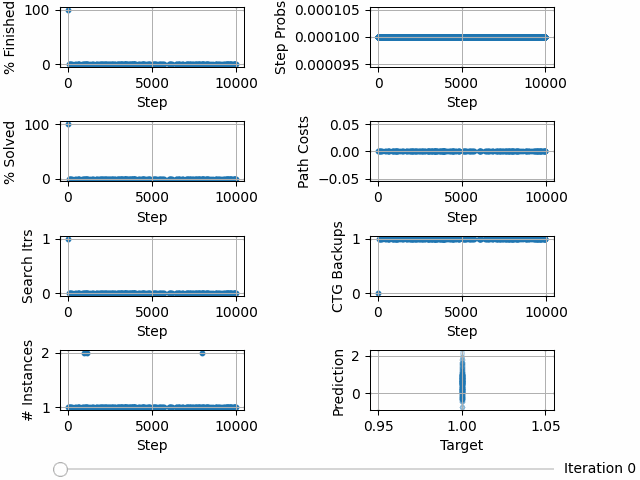
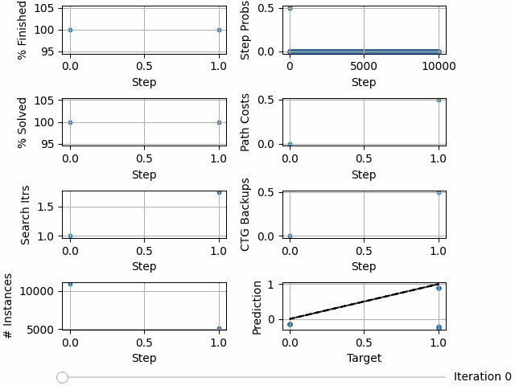

Balancing Training Data Difficulty¶
Although problem instance generation need not use the specified number of steps when generating problem instances, some implementations that do can use the number of steps used to generate a instance as an approximation of the difficulty of that problem instance. If the maximum number of steps is too small, then the heuristic function will not generalize to more difficult problems. If the maximum number of steps is too large, then the heuristic function may not see enough solved instances during training, resulting in increasingly large cost-to-go targets.
To address this, the maximum number of steps can be initialized to 1 and doubled everytime the average percentage of problems solved reached 50% until a pre-determined absolute maximum number of steps is reached (see [AS26]).
We will experiment with the 6x6 sliding tile puzzle (i.e. the 35-puzzle) when training with a maximum number of steps of 10,000.
Without Balancing¶
deepxube train --domain npuzzle.6 --fn heurv,resnet_fc.200H_2B_bn --pathfind graph --up path_rl.10000sm_100up_100sitrs_lhbl_2p --tr tr_h.200bs_5000maxit --dir results/npuzzle6/10000sm/
/opt/miniconda3/envs/deepxube/bin/deepxube train --domain npuzzle.6 --fn heurv,resnet_fc.200H_2B_bn --pathfind graph --up path_rl.10000sm_100up_100sitrs_lhbl_2p --tr tr_h.200bs_5000maxit --dir results/npuzzle6/10000sm/
device: cpu, devices: [], on_gpu: False
FlatSGConcrete (name: flat_sg)
HeurVNNetParC()
ResnetFCHeur(
(one_hots): ModuleList(
(0): OneHot()
)
(heur): Sequential(
(0): Linear(in_features=1296, out_features=200, bias=True)
(1): ResnetModel(
(blocks): ModuleList(
(0-1): 2 x ModuleList(
(0): FullyConnectedModel(
(layers): ModuleList(
(0): ModuleList(
(0): Linear(in_features=200, out_features=200, bias=True)
(1): BatchNorm1d(200, eps=1e-05, momentum=0.1, affine=True, track_running_stats=True)
(2): ReLU()
)
(1): ModuleList(
(0): Linear(in_features=200, out_features=200, bias=True)
(1): BatchNorm1d(200, eps=1e-05, momentum=0.1, affine=True, track_running_stats=True)
(2): LinearAct()
)
)
)
)
)
(act_fns): ModuleList(
(0-1): 2 x ReLU()
)
)
(2): Linear(in_features=200, out_features=1, bias=True)
)
)
Number of trainable parameters: 422,001
(name: heurv, nnet_input_name_args: flat_sg)
NPuzzle(dim=6) (name: npuzzle)
PFNsHeurVC(heurv=<function NNetPar.get_nnet_fn.<locals>.nnet_fn at 0x10e6b0820>)
GraphSearchHeurNodeActsEnum(batch_size=1, weight=1.0, eps=0.0, finished_heur_thresh=None) (name: graph_v)
UpdateHeurVRLKeepGoal, UpArgs(procs=2, step_max=10000, search_itrs=100, up_itrs=100, up_gen_itrs=None, rb=0, up_batch_size=100, nnet_batch_size=20000, sync_main=False, v=False), UpRLArgs(ub_heur_solns=False, lhbl=True) (name: path_rl_v)
Initializing Status
Initializing Train Summary
Initializing NNet
Initializing Optimizer
Initializing data buffer with max size 20,000
Input array sizes:
index: 0, dtype: uint8, shape: (36,)
index: 1, dtype: float64, shape: ()
Data buffer initialized. Time: 8.082389831542969e-05
TrainHeur, TrainArgs(batch_size=200, max_itrs=5000, balance_steps=False, loss_thresh=inf, checkpoint=0, grad_accum=1, display=0) (name: tr_h)
Starting updater processes
Time: 0.013691186904907227
Getting Data - itr: 0, update_num: 0, targ_update: 0, num_gen: 20,000, step max (curr): 10000
Times - steps_gen: 0.03, inst_info: 0.00, inst_add: 0.00, in_data: 0.00, backup: 0.02, to_np: 0.01, update_perf: 0.00, put: 0.00, gc: 0.22, ->get_states: 1.95, ->pathfinding: 0.54, Tot: 2.75
(get_states): sample_goalstate_goal_pairs: 0.00, random_walk: 1.95, Tot: 1.95
(pathfinding): root: 0.00, pop_n: 0.00, is_solved: 0.01, goal: 0.00, expand: 0.25, nodes: 0.13, up_inst: 0.03, heur: 0.01, filt: 0.05, cost: 0.01, pushpop: 0.02, pop_e: 0.01, set_next: 0.00, Tot: 0.54
Data - %solved: 0.51, path_costs: 0.000, search_itrs: 1.000, %finished: 0.51, num_inst: 200, rb size/max_size: 0/0, cost-to-go (mean/min/max): 1.00/0.00/2.00
Train - itrs: 100, loss: 7.28E-03, targ_updated: True
Times - up_start: 0.01, up_data: 2.12, up_end: 0.25, data_samp: 0.00, train: 0.35, save_net: 0.01, save_status: 0.00, Tot: 2.74
Getting Data - itr: 100, update_num: 1, targ_update: 1, num_gen: 20,000, step max (curr): 10000
Times - steps_gen: 0.00, inst_info: 0.00, inst_add: 0.00, update_perf: 0.00, in_data: 0.00, backup: 0.02, to_np: 0.01, put: 0.00, gc: 0.24, ->get_states: 1.92, ->pathfinding: 0.98, Tot: 3.18
(get_states): sample_goalstate_goal_pairs: 0.00, random_walk: 1.92, Tot: 1.92
(pathfinding): root: 0.00, pop_n: 0.01, is_solved: 0.02, goal: 0.00, expand: 0.17, nodes: 0.23, up_inst: 0.04, heur: 0.39, filt: 0.06, cost: 0.01, pushpop: 0.04, pop_e: 0.01, set_next: 0.00, Tot: 0.98
Data - %solved: 0.00, path_costs: 0.000, search_itrs: 0.000, %finished: 0.00, num_inst: 200, rb size/max_size: 0/0, cost-to-go (mean/min/max): 1.94/1.60/3.13
Train - itrs: 100, loss: 1.10E-02, targ_updated: True
Times - up_start: 0.00, up_data: 1.49, up_end: 0.25, data_samp: 0.00, train: 0.30, save_net: 0.01, save_status: 0.00, Tot: 2.06
Getting Data - itr: 200, update_num: 2, targ_update: 2, num_gen: 20,000, step max (curr): 10000
Times - steps_gen: 0.00, inst_info: 0.00, inst_add: 0.00, update_perf: 0.00, in_data: 0.00, backup: 0.02, to_np: 0.01, put: 0.00, gc: 0.22, ->get_states: 1.94, ->pathfinding: 1.01, Tot: 3.20
(get_states): sample_goalstate_goal_pairs: 0.00, random_walk: 1.94, Tot: 1.94
(pathfinding): root: 0.00, pop_n: 0.00, is_solved: 0.02, goal: 0.00, expand: 0.27, nodes: 0.19, up_inst: 0.04, heur: 0.37, filt: 0.06, cost: 0.01, pushpop: 0.03, pop_e: 0.01, set_next: 0.00, Tot: 1.01
Data - %solved: 0.51, path_costs: 2.000, search_itrs: 5.000, %finished: 0.51, num_inst: 200, rb size/max_size: 0/0, cost-to-go (mean/min/max): 2.84/0.00/4.09
Train - itrs: 100, loss: 8.75E-03, targ_updated: True
Times - up_start: 0.00, up_data: 1.55, up_end: 0.24, data_samp: 0.00, train: 0.28, save_net: 0.01, save_status: 0.00, Tot: 2.08
Getting Data - itr: 300, update_num: 3, targ_update: 3, num_gen: 20,000, step max (curr): 10000
Times - steps_gen: 0.00, inst_info: 0.00, inst_add: 0.00, update_perf: 0.00, in_data: 0.00, backup: 0.02, to_np: 0.01, put: 0.00, gc: 0.24, ->get_states: 1.90, ->pathfinding: 1.01, Tot: 3.17
(get_states): sample_goalstate_goal_pairs: 0.00, random_walk: 1.90, Tot: 1.90
(pathfinding): root: 0.00, pop_n: 0.01, is_solved: 0.02, goal: 0.00, expand: 0.34, nodes: 0.08, up_inst: 0.04, heur: 0.40, filt: 0.06, cost: 0.01, pushpop: 0.04, pop_e: 0.01, set_next: 0.00, Tot: 1.01
Data - %solved: 0.00, path_costs: 0.000, search_itrs: 0.000, %finished: 0.00, num_inst: 200, rb size/max_size: 0/0, cost-to-go (mean/min/max): 3.73/3.35/4.96
Train - itrs: 100, loss: 1.35E-02, targ_updated: True
Times - up_start: 0.00, up_data: 1.61, up_end: 0.15, data_samp: 0.00, train: 0.35, save_net: 0.01, save_status: 0.00, Tot: 2.12
Getting Data - itr: 400, update_num: 4, targ_update: 4, num_gen: 20,000, step max (curr): 10000
Times - steps_gen: 0.00, inst_info: 0.00, inst_add: 0.00, update_perf: 0.00, in_data: 0.00, backup: 0.02, to_np: 0.01, put: 0.00, gc: 0.32, ->get_states: 2.62, ->pathfinding: 2.34, Tot: 5.30
(get_states): sample_goalstate_goal_pairs: 0.00, random_walk: 2.62, Tot: 2.62
(pathfinding): root: 0.00, pop_n: 0.01, is_solved: 0.03, goal: 0.01, expand: 0.20, nodes: 0.50, up_inst: 0.06, heur: 1.30, filt: 0.12, cost: 0.03, pushpop: 0.06, pop_e: 0.02, set_next: 0.01, Tot: 2.34
Data - %solved: 1.01, path_costs: 3.000, search_itrs: 19.500, %finished: 1.01, num_inst: 200, rb size/max_size: 0/0, cost-to-go (mean/min/max): 4.58/0.00/5.78
Train - itrs: 100, loss: 3.13E-02, targ_updated: True
Times - up_start: 0.00, up_data: 2.52, up_end: 0.33, data_samp: 0.00, train: 0.46, save_net: 0.01, save_status: 0.00, Tot: 3.33
Getting Data - itr: 500, update_num: 5, targ_update: 5, num_gen: 20,000, step max (curr): 10000
Times - steps_gen: 0.00, inst_info: 0.00, inst_add: 0.00, update_perf: 0.00, in_data: 0.00, backup: 0.02, to_np: 0.01, put: 0.00, gc: 0.29, ->get_states: 1.93, ->pathfinding: 1.13, Tot: 3.38
(get_states): sample_goalstate_goal_pairs: 0.00, random_walk: 1.93, Tot: 1.93
(pathfinding): root: 0.00, pop_n: 0.01, is_solved: 0.02, goal: 0.00, expand: 0.13, nodes: 0.31, up_inst: 0.04, heur: 0.49, filt: 0.07, cost: 0.02, pushpop: 0.04, pop_e: 0.01, set_next: 0.00, Tot: 1.13
Data - %solved: 0.51, path_costs: 3.667, search_itrs: 32.667, %finished: 0.51, num_inst: 202, rb size/max_size: 0/0, cost-to-go (mean/min/max): 5.42/0.00/6.65
Train - itrs: 100, loss: 3.32E-02, targ_updated: True
Times - up_start: 0.00, up_data: 1.57, up_end: 0.39, data_samp: 0.00, train: 0.35, save_net: 0.01, save_status: 0.00, Tot: 2.33
Getting Data - itr: 600, update_num: 6, targ_update: 6, num_gen: 20,000, step max (curr): 10000
Times - steps_gen: 0.00, inst_info: 0.00, inst_add: 0.00, update_perf: 0.00, in_data: 0.00, backup: 0.02, to_np: 0.01, put: 0.00, gc: 0.30, ->get_states: 2.09, ->pathfinding: 1.06, Tot: 3.49
(get_states): sample_goalstate_goal_pairs: 0.00, random_walk: 2.09, Tot: 2.09
(pathfinding): root: 0.00, pop_n: 0.01, is_solved: 0.02, goal: 0.00, expand: 0.07, nodes: 0.38, up_inst: 0.04, heur: 0.42, filt: 0.06, cost: 0.01, pushpop: 0.04, pop_e: 0.01, set_next: 0.00, Tot: 1.06
Data - %solved: 0.00, path_costs: 0.000, search_itrs: 0.000, %finished: 0.00, num_inst: 200, rb size/max_size: 0/0, cost-to-go (mean/min/max): 6.32/5.30/7.62
Train - itrs: 100, loss: 2.31E-02, targ_updated: True
Times - up_start: 0.00, up_data: 1.60, up_end: 0.32, data_samp: 0.00, train: 0.29, save_net: 0.01, save_status: 0.00, Tot: 2.22
Getting Data - itr: 700, update_num: 7, targ_update: 7, num_gen: 20,000, step max (curr): 10000
Times - steps_gen: 0.00, inst_info: 0.00, inst_add: 0.00, update_perf: 0.00, in_data: 0.00, backup: 0.03, to_np: 0.01, put: 0.00, gc: 0.24, ->get_states: 1.99, ->pathfinding: 0.98, Tot: 3.24
(get_states): sample_goalstate_goal_pairs: 0.00, random_walk: 1.99, Tot: 1.99
(pathfinding): root: 0.00, pop_n: 0.00, is_solved: 0.02, goal: 0.00, expand: 0.15, nodes: 0.25, up_inst: 0.04, heur: 0.39, filt: 0.06, cost: 0.01, pushpop: 0.04, pop_e: 0.01, set_next: 0.00, Tot: 0.98
Data - %solved: 0.00, path_costs: 0.000, search_itrs: 0.000, %finished: 0.00, num_inst: 200, rb size/max_size: 0/0, cost-to-go (mean/min/max): 7.19/6.36/8.52
Train - itrs: 100, loss: 1.40E-02, targ_updated: True
Times - up_start: 0.00, up_data: 1.52, up_end: 0.27, data_samp: 0.00, train: 0.28, save_net: 0.01, save_status: 0.00, Tot: 2.08
Getting Data - itr: 800, update_num: 8, targ_update: 8, num_gen: 20,000, step max (curr): 10000
Times - steps_gen: 0.00, inst_info: 0.00, inst_add: 0.00, update_perf: 0.00, in_data: 0.00, backup: 0.02, to_np: 0.01, put: 0.00, gc: 0.31, ->get_states: 2.02, ->pathfinding: 1.50, Tot: 3.86
(get_states): sample_goalstate_goal_pairs: 0.00, random_walk: 2.02, Tot: 2.02
(pathfinding): root: 0.00, pop_n: 0.01, is_solved: 0.02, goal: 0.00, expand: 0.24, nodes: 0.38, up_inst: 0.04, heur: 0.63, filt: 0.08, cost: 0.02, pushpop: 0.06, pop_e: 0.01, set_next: 0.00, Tot: 1.50
Data - %solved: 0.00, path_costs: 0.000, search_itrs: 0.000, %finished: 0.00, num_inst: 200, rb size/max_size: 0/0, cost-to-go (mean/min/max): 8.07/7.55/9.36
Train - itrs: 100, loss: 2.26E-02, targ_updated: True
Times - up_start: 0.00, up_data: 1.90, up_end: 0.25, data_samp: 0.00, train: 0.33, save_net: 0.01, save_status: 0.00, Tot: 2.49
Getting Data - itr: 900, update_num: 9, targ_update: 9, num_gen: 20,000, step max (curr): 10000
Times - steps_gen: 0.00, inst_info: 0.00, inst_add: 0.00, update_perf: 0.00, in_data: 0.00, backup: 0.02, to_np: 0.01, put: 0.00, gc: 0.26, ->get_states: 2.04, ->pathfinding: 0.93, Tot: 3.27
(get_states): sample_goalstate_goal_pairs: 0.00, random_walk: 2.04, Tot: 2.04
(pathfinding): root: 0.00, pop_n: 0.01, is_solved: 0.02, goal: 0.00, expand: 0.13, nodes: 0.20, up_inst: 0.04, heur: 0.41, filt: 0.06, cost: 0.02, pushpop: 0.04, pop_e: 0.01, set_next: 0.00, Tot: 0.93
Data - %solved: 0.00, path_costs: 0.000, search_itrs: 0.000, %finished: 0.00, num_inst: 200, rb size/max_size: 0/0, cost-to-go (mean/min/max): 8.91/8.28/10.28
Train - itrs: 100, loss: 2.23E-02, targ_updated: True
Times - up_start: 0.00, up_data: 1.61, up_end: 0.27, data_samp: 0.00, train: 0.32, save_net: 0.01, save_status: 0.00, Tot: 2.21
Getting Data - itr: 1000, update_num: 10, targ_update: 10, num_gen: 20,000, step max (curr): 10000
Times - steps_gen: 0.00, inst_info: 0.00, inst_add: 0.00, update_perf: 0.00, in_data: 0.00, backup: 0.02, to_np: 0.01, put: 0.00, gc: 0.33, ->get_states: 1.99, ->pathfinding: 1.10, Tot: 3.46
(get_states): sample_goalstate_goal_pairs: 0.00, random_walk: 1.99, Tot: 1.99
(pathfinding): root: 0.00, pop_n: 0.01, is_solved: 0.02, goal: 0.00, expand: 0.32, nodes: 0.16, up_inst: 0.04, heur: 0.43, filt: 0.07, cost: 0.01, pushpop: 0.04, pop_e: 0.01, set_next: 0.00, Tot: 1.10
Data - %solved: 0.51, path_costs: 0.515, search_itrs: 1.515, %finished: 0.51, num_inst: 265, rb size/max_size: 0/0, cost-to-go (mean/min/max): 9.69/0.00/11.20
Train - itrs: 100, loss: 2.44E-02, targ_updated: True
Times - up_start: 0.00, up_data: 1.76, up_end: 0.17, data_samp: 0.00, train: 0.35, save_net: 0.01, save_status: 0.00, Tot: 2.29
Getting Data - itr: 1100, update_num: 11, targ_update: 11, num_gen: 20,000, step max (curr): 10000
Times - steps_gen: 0.00, inst_info: 0.00, inst_add: 0.00, update_perf: 0.00, in_data: 0.00, backup: 0.02, to_np: 0.01, put: 0.00, gc: 0.22, ->get_states: 1.95, ->pathfinding: 1.07, Tot: 3.27
(get_states): sample_goalstate_goal_pairs: 0.00, random_walk: 1.95, Tot: 1.95
(pathfinding): root: 0.00, pop_n: 0.01, is_solved: 0.02, goal: 0.00, expand: 0.35, nodes: 0.11, up_inst: 0.04, heur: 0.42, filt: 0.06, cost: 0.01, pushpop: 0.04, pop_e: 0.01, set_next: 0.00, Tot: 1.07
Data - %solved: 1.02, path_costs: 6.800, search_itrs: 21.900, %finished: 1.02, num_inst: 205, rb size/max_size: 0/0, cost-to-go (mean/min/max): 10.52/0.00/12.00
Train - itrs: 100, loss: 3.05E-02, targ_updated: True
Times - up_start: 0.00, up_data: 1.58, up_end: 0.25, data_samp: 0.00, train: 0.29, save_net: 0.01, save_status: 0.00, Tot: 2.12
Getting Data - itr: 1200, update_num: 12, targ_update: 12, num_gen: 20,000, step max (curr): 10000
Times - steps_gen: 0.00, inst_info: 0.00, inst_add: 0.00, update_perf: 0.00, in_data: 0.00, backup: 0.02, to_np: 0.01, put: 0.00, gc: 0.34, ->get_states: 2.01, ->pathfinding: 1.55, Tot: 3.93
(get_states): sample_goalstate_goal_pairs: 0.00, random_walk: 2.01, Tot: 2.01
(pathfinding): root: 0.00, pop_n: 0.01, is_solved: 0.03, goal: 0.00, expand: 0.31, nodes: 0.33, up_inst: 0.04, heur: 0.67, filt: 0.08, cost: 0.02, pushpop: 0.05, pop_e: 0.01, set_next: 0.00, Tot: 1.55
Data - %solved: 0.00, path_costs: 0.000, search_itrs: 0.000, %finished: 0.00, num_inst: 200, rb size/max_size: 0/0, cost-to-go (mean/min/max): 11.36/2.46/13.21
Train - itrs: 100, loss: 3.22E-02, targ_updated: True
Times - up_start: 0.00, up_data: 1.81, up_end: 0.32, data_samp: 0.00, train: 0.47, save_net: 0.01, save_status: 0.00, Tot: 2.62
Getting Data - itr: 1300, update_num: 13, targ_update: 13, num_gen: 20,000, step max (curr): 10000
Times - steps_gen: 0.00, inst_info: 0.00, inst_add: 0.00, in_data: 0.00, backup: 0.02, to_np: 0.01, update_perf: 0.00, put: 0.00, gc: 0.29, ->get_states: 2.44, ->pathfinding: 1.35, Tot: 4.12
(get_states): sample_goalstate_goal_pairs: 0.00, random_walk: 2.44, Tot: 2.44
(pathfinding): root: 0.00, pop_n: 0.01, is_solved: 0.02, goal: 0.00, expand: 0.15, nodes: 0.28, up_inst: 0.04, heur: 0.73, filt: 0.06, cost: 0.01, pushpop: 0.04, pop_e: 0.01, set_next: 0.00, Tot: 1.35
Data - %solved: 1.02, path_costs: 1.000, search_itrs: 5.375, %finished: 1.02, num_inst: 306, rb size/max_size: 0/0, cost-to-go (mean/min/max): 12.02/0.00/13.69
Train - itrs: 100, loss: 6.11E-02, targ_updated: True
Times - up_start: 0.00, up_data: 1.93, up_end: 0.29, data_samp: 0.00, train: 0.29, save_net: 0.01, save_status: 0.00, Tot: 2.52
Getting Data - itr: 1400, update_num: 14, targ_update: 14, num_gen: 20,000, step max (curr): 10000
Times - steps_gen: 0.00, inst_info: 0.00, inst_add: 0.00, update_perf: 0.00, in_data: 0.00, backup: 0.02, to_np: 0.01, put: 0.00, gc: 0.24, ->get_states: 2.00, ->pathfinding: 0.87, Tot: 3.15
(get_states): sample_goalstate_goal_pairs: 0.00, random_walk: 2.00, Tot: 2.00
(pathfinding): root: 0.00, pop_n: 0.01, is_solved: 0.02, goal: 0.00, expand: 0.07, nodes: 0.23, up_inst: 0.04, heur: 0.39, filt: 0.06, cost: 0.01, pushpop: 0.04, pop_e: 0.01, set_next: 0.00, Tot: 0.87
Data - %solved: 0.51, path_costs: 4.100, search_itrs: 7.500, %finished: 0.51, num_inst: 209, rb size/max_size: 0/0, cost-to-go (mean/min/max): 12.92/0.00/14.83
Train - itrs: 100, loss: 7.04E-02, targ_updated: True
Times - up_start: 0.00, up_data: 1.47, up_end: 0.26, data_samp: 0.00, train: 0.30, save_net: 0.01, save_status: 0.00, Tot: 2.04
Getting Data - itr: 1500, update_num: 15, targ_update: 15, num_gen: 20,000, step max (curr): 10000
Times - steps_gen: 0.00, inst_info: 0.00, inst_add: 0.00, update_perf: 0.00, in_data: 0.00, backup: 0.02, to_np: 0.01, put: 0.00, gc: 0.24, ->get_states: 1.98, ->pathfinding: 0.96, Tot: 3.21
(get_states): sample_goalstate_goal_pairs: 0.00, random_walk: 1.98, Tot: 1.98
(pathfinding): root: 0.00, pop_n: 0.01, is_solved: 0.02, goal: 0.00, expand: 0.21, nodes: 0.15, up_inst: 0.04, heur: 0.41, filt: 0.07, cost: 0.01, pushpop: 0.04, pop_e: 0.01, set_next: 0.00, Tot: 0.96
Data - %solved: 1.51, path_costs: 3.932, search_itrs: 18.280, %finished: 1.51, num_inst: 253, rb size/max_size: 0/0, cost-to-go (mean/min/max): 13.80/0.00/15.47
Train - itrs: 100, loss: 5.67E-02, targ_updated: True
Times - up_start: 0.00, up_data: 1.53, up_end: 0.23, data_samp: 0.00, train: 0.32, save_net: 0.01, save_status: 0.00, Tot: 2.09
Getting Data - itr: 1600, update_num: 16, targ_update: 16, num_gen: 20,000, step max (curr): 10000
Times - steps_gen: 0.00, inst_info: 0.00, inst_add: 0.00, update_perf: 0.00, in_data: 0.00, backup: 0.02, to_np: 0.01, put: 0.00, gc: 0.29, ->get_states: 2.03, ->pathfinding: 1.16, Tot: 3.51
(get_states): sample_goalstate_goal_pairs: 0.00, random_walk: 2.03, Tot: 2.03
(pathfinding): root: 0.00, pop_n: 0.01, is_solved: 0.02, goal: 0.00, expand: 0.21, nodes: 0.33, up_inst: 0.04, heur: 0.42, filt: 0.07, cost: 0.01, pushpop: 0.04, pop_e: 0.01, set_next: 0.00, Tot: 1.16
Data - %solved: 0.00, path_costs: 0.000, search_itrs: 0.000, %finished: 0.00, num_inst: 200, rb size/max_size: 0/0, cost-to-go (mean/min/max): 14.88/5.78/16.35
Train - itrs: 100, loss: 3.33E-02, targ_updated: True
Times - up_start: 0.00, up_data: 1.62, up_end: 0.29, data_samp: 0.00, train: 0.29, save_net: 0.01, save_status: 0.00, Tot: 2.21
Getting Data - itr: 1700, update_num: 17, targ_update: 17, num_gen: 20,000, step max (curr): 10000
Times - steps_gen: 0.00, inst_info: 0.00, inst_add: 0.00, update_perf: 0.00, in_data: 0.00, backup: 0.02, to_np: 0.01, put: 0.00, gc: 0.26, ->get_states: 1.97, ->pathfinding: 1.03, Tot: 3.28
(get_states): sample_goalstate_goal_pairs: 0.00, random_walk: 1.97, Tot: 1.97
(pathfinding): root: 0.00, pop_n: 0.00, is_solved: 0.02, goal: 0.00, expand: 0.14, nodes: 0.31, up_inst: 0.04, heur: 0.39, filt: 0.06, cost: 0.01, pushpop: 0.04, pop_e: 0.01, set_next: 0.00, Tot: 1.03
Data - %solved: 0.00, path_costs: 0.000, search_itrs: 0.000, %finished: 0.00, num_inst: 200, rb size/max_size: 0/0, cost-to-go (mean/min/max): 15.82/10.48/17.27
Train - itrs: 100, loss: 2.55E-02, targ_updated: True
Times - up_start: 0.00, up_data: 1.53, up_end: 0.27, data_samp: 0.00, train: 0.28, save_net: 0.01, save_status: 0.00, Tot: 2.10
Getting Data - itr: 1800, update_num: 18, targ_update: 18, num_gen: 20,000, step max (curr): 10000
Times - steps_gen: 0.00, inst_info: 0.00, inst_add: 0.00, update_perf: 0.00, in_data: 0.00, backup: 0.02, to_np: 0.01, put: 0.00, gc: 0.20, ->get_states: 2.00, ->pathfinding: 1.00, Tot: 3.22
(get_states): sample_goalstate_goal_pairs: 0.00, random_walk: 2.00, Tot: 2.00
(pathfinding): root: 0.00, pop_n: 0.00, is_solved: 0.02, goal: 0.00, expand: 0.22, nodes: 0.22, up_inst: 0.04, heur: 0.38, filt: 0.06, cost: 0.01, pushpop: 0.04, pop_e: 0.01, set_next: 0.00, Tot: 1.00
Data - %solved: 0.51, path_costs: 7.000, search_itrs: 16.667, %finished: 0.51, num_inst: 202, rb size/max_size: 0/0, cost-to-go (mean/min/max): 16.65/0.00/18.10
Train - itrs: 100, loss: 3.58E-02, targ_updated: True
Times - up_start: 0.00, up_data: 1.58, up_end: 0.23, data_samp: 0.00, train: 0.32, save_net: 0.01, save_status: 0.00, Tot: 2.14
Getting Data - itr: 1900, update_num: 19, targ_update: 19, num_gen: 20,000, step max (curr): 10000
Times - steps_gen: 0.00, inst_info: 0.00, inst_add: 0.00, update_perf: 0.00, in_data: 0.00, backup: 0.02, to_np: 0.01, put: 0.00, gc: 0.29, ->get_states: 2.15, ->pathfinding: 1.19, Tot: 3.66
(get_states): sample_goalstate_goal_pairs: 0.00, random_walk: 2.15, Tot: 2.15
(pathfinding): root: 0.00, pop_n: 0.01, is_solved: 0.02, goal: 0.00, expand: 0.21, nodes: 0.17, up_inst: 0.04, heur: 0.61, filt: 0.07, cost: 0.02, pushpop: 0.04, pop_e: 0.01, set_next: 0.00, Tot: 1.19
Data - %solved: 0.00, path_costs: 0.000, search_itrs: 0.000, %finished: 0.00, num_inst: 200, rb size/max_size: 0/0, cost-to-go (mean/min/max): 17.36/2.29/19.01
Train - itrs: 100, loss: 5.21E-02, targ_updated: True
Times - up_start: 0.00, up_data: 1.85, up_end: 0.16, data_samp: 0.00, train: 0.29, save_net: 0.01, save_status: 0.00, Tot: 2.32
Getting Data - itr: 2000, update_num: 20, targ_update: 20, num_gen: 20,000, step max (curr): 10000
Times - steps_gen: 0.00, inst_info: 0.00, inst_add: 0.00, update_perf: 0.00, in_data: 0.00, backup: 0.02, to_np: 0.01, put: 0.00, gc: 0.19, ->get_states: 2.05, ->pathfinding: 1.05, Tot: 3.32
(get_states): sample_goalstate_goal_pairs: 0.00, random_walk: 2.05, Tot: 2.05
(pathfinding): root: 0.00, pop_n: 0.01, is_solved: 0.02, goal: 0.00, expand: 0.11, nodes: 0.37, up_inst: 0.04, heur: 0.38, filt: 0.06, cost: 0.01, pushpop: 0.04, pop_e: 0.01, set_next: 0.00, Tot: 1.05
Data - %solved: 1.51, path_costs: 6.889, search_itrs: 16.333, %finished: 1.51, num_inst: 204, rb size/max_size: 0/0, cost-to-go (mean/min/max): 18.15/0.00/19.99
Train - itrs: 100, loss: 5.42E-02, targ_updated: True
Times - up_start: 0.00, up_data: 1.62, up_end: 0.23, data_samp: 0.00, train: 0.29, save_net: 0.01, save_status: 0.00, Tot: 2.17
Getting Data - itr: 2100, update_num: 21, targ_update: 21, num_gen: 20,000, step max (curr): 10000
Times - steps_gen: 0.00, inst_info: 0.00, inst_add: 0.00, update_perf: 0.00, in_data: 0.00, backup: 0.02, to_np: 0.01, put: 0.00, gc: 0.19, ->get_states: 2.06, ->pathfinding: 0.92, Tot: 3.21
(get_states): sample_goalstate_goal_pairs: 0.00, random_walk: 2.06, Tot: 2.06
(pathfinding): root: 0.00, pop_n: 0.01, is_solved: 0.02, goal: 0.00, expand: 0.21, nodes: 0.12, up_inst: 0.04, heur: 0.40, filt: 0.06, cost: 0.01, pushpop: 0.04, pop_e: 0.01, set_next: 0.00, Tot: 0.92
Data - %solved: 0.50, path_costs: 1.156, search_itrs: 2.156, %finished: 0.50, num_inst: 244, rb size/max_size: 0/0, cost-to-go (mean/min/max): 18.96/0.00/20.78
Train - itrs: 100, loss: 5.32E-02, targ_updated: True
Times - up_start: 0.00, up_data: 1.56, up_end: 0.22, data_samp: 0.00, train: 0.29, save_net: 0.01, save_status: 0.00, Tot: 2.09
Getting Data - itr: 2200, update_num: 22, targ_update: 22, num_gen: 20,000, step max (curr): 10000
Times - steps_gen: 0.00, inst_info: 0.00, inst_add: 0.00, update_perf: 0.00, in_data: 0.00, backup: 0.02, to_np: 0.01, put: 0.00, gc: 0.24, ->get_states: 2.02, ->pathfinding: 1.06, Tot: 3.35
(get_states): sample_goalstate_goal_pairs: 0.00, random_walk: 2.02, Tot: 2.02
(pathfinding): root: 0.00, pop_n: 0.00, is_solved: 0.02, goal: 0.00, expand: 0.19, nodes: 0.30, up_inst: 0.04, heur: 0.39, filt: 0.06, cost: 0.01, pushpop: 0.03, pop_e: 0.01, set_next: 0.00, Tot: 1.06
Data - %solved: 0.50, path_costs: 6.250, search_itrs: 11.000, %finished: 0.50, num_inst: 203, rb size/max_size: 0/0, cost-to-go (mean/min/max): 19.70/0.00/21.65
Train - itrs: 100, loss: 1.01E-01, targ_updated: True
Times - up_start: 0.00, up_data: 1.60, up_end: 0.24, data_samp: 0.00, train: 0.28, save_net: 0.01, save_status: 0.00, Tot: 2.13
Getting Data - itr: 2300, update_num: 23, targ_update: 23, num_gen: 20,000, step max (curr): 10000
Times - steps_gen: 0.00, inst_info: 0.00, inst_add: 0.00, update_perf: 0.00, in_data: 0.00, backup: 0.02, to_np: 0.01, put: 0.00, gc: 0.22, ->get_states: 1.97, ->pathfinding: 1.06, Tot: 3.27
(get_states): sample_goalstate_goal_pairs: 0.00, random_walk: 1.97, Tot: 1.97
(pathfinding): root: 0.00, pop_n: 0.01, is_solved: 0.02, goal: 0.00, expand: 0.18, nodes: 0.24, up_inst: 0.04, heur: 0.44, filt: 0.07, cost: 0.01, pushpop: 0.04, pop_e: 0.01, set_next: 0.00, Tot: 1.06
Data - %solved: 0.50, path_costs: 3.611, search_itrs: 5.333, %finished: 0.50, num_inst: 217, rb size/max_size: 0/0, cost-to-go (mean/min/max): 20.82/0.00/22.46
Train - itrs: 100, loss: 2.55E-02, targ_updated: True
Times - up_start: 0.00, up_data: 1.55, up_end: 0.25, data_samp: 0.00, train: 0.28, save_net: 0.01, save_status: 0.00, Tot: 2.10
Getting Data - itr: 2400, update_num: 24, targ_update: 24, num_gen: 20,000, step max (curr): 10000
Times - steps_gen: 0.00, inst_info: 0.00, inst_add: 0.00, update_perf: 0.00, in_data: 0.00, backup: 0.02, to_np: 0.01, put: 0.00, gc: 0.27, ->get_states: 1.97, ->pathfinding: 0.99, Tot: 3.26
(get_states): sample_goalstate_goal_pairs: 0.00, random_walk: 1.97, Tot: 1.97
(pathfinding): root: 0.00, pop_n: 0.00, is_solved: 0.02, goal: 0.00, expand: 0.18, nodes: 0.25, up_inst: 0.04, heur: 0.38, filt: 0.06, cost: 0.01, pushpop: 0.03, pop_e: 0.01, set_next: 0.00, Tot: 0.99
Data - %solved: 0.44, path_costs: 7.857, search_itrs: 14.000, %finished: 0.44, num_inst: 206, rb size/max_size: 0/0, cost-to-go (mean/min/max): 21.52/0.00/23.43
Train - itrs: 100, loss: 4.28E-02, targ_updated: True
Times - up_start: 0.00, up_data: 1.51, up_end: 0.28, data_samp: 0.00, train: 0.28, save_net: 0.01, save_status: 0.00, Tot: 2.08
Getting Data - itr: 2500, update_num: 25, targ_update: 25, num_gen: 20,000, step max (curr): 10000
Times - steps_gen: 0.00, inst_info: 0.00, inst_add: 0.00, update_perf: 0.00, in_data: 0.00, backup: 0.02, to_np: 0.01, put: 0.00, gc: 0.24, ->get_states: 1.95, ->pathfinding: 0.99, Tot: 3.22
(get_states): sample_goalstate_goal_pairs: 0.00, random_walk: 1.95, Tot: 1.95
(pathfinding): root: 0.00, pop_n: 0.00, is_solved: 0.02, goal: 0.00, expand: 0.26, nodes: 0.17, up_inst: 0.04, heur: 0.38, filt: 0.06, cost: 0.01, pushpop: 0.03, pop_e: 0.01, set_next: 0.00, Tot: 0.99
Data - %solved: 0.00, path_costs: 0.000, search_itrs: 0.000, %finished: 0.00, num_inst: 200, rb size/max_size: 0/0, cost-to-go (mean/min/max): 22.26/3.15/24.20
Train - itrs: 100, loss: 3.38E-02, targ_updated: True
Times - up_start: 0.00, up_data: 1.50, up_end: 0.28, data_samp: 0.00, train: 0.30, save_net: 0.01, save_status: 0.00, Tot: 2.10
Getting Data - itr: 2600, update_num: 26, targ_update: 26, num_gen: 20,000, step max (curr): 10000
Times - steps_gen: 0.00, inst_info: 0.00, inst_add: 0.00, update_perf: 0.00, in_data: 0.00, backup: 0.02, to_np: 0.01, put: 0.00, gc: 0.29, ->get_states: 2.28, ->pathfinding: 1.04, Tot: 3.65
(get_states): sample_goalstate_goal_pairs: 0.00, random_walk: 2.28, Tot: 2.28
(pathfinding): root: 0.00, pop_n: 0.01, is_solved: 0.02, goal: 0.00, expand: 0.07, nodes: 0.35, up_inst: 0.04, heur: 0.42, filt: 0.07, cost: 0.02, pushpop: 0.04, pop_e: 0.01, set_next: 0.00, Tot: 1.04
Data - %solved: 0.51, path_costs: 8.000, search_itrs: 18.000, %finished: 0.51, num_inst: 200, rb size/max_size: 0/0, cost-to-go (mean/min/max): 23.17/0.00/25.20
Train - itrs: 100, loss: 3.29E-02, targ_updated: True
Times - up_start: 0.00, up_data: 1.84, up_end: 0.17, data_samp: 0.00, train: 0.30, save_net: 0.01, save_status: 0.00, Tot: 2.32
Getting Data - itr: 2700, update_num: 27, targ_update: 27, num_gen: 20,000, step max (curr): 10000
Times - steps_gen: 0.00, inst_info: 0.00, inst_add: 0.00, update_perf: 0.00, in_data: 0.00, backup: 0.02, to_np: 0.01, put: 0.00, gc: 0.19, ->get_states: 1.98, ->pathfinding: 0.93, Tot: 3.13
(get_states): sample_goalstate_goal_pairs: 0.00, random_walk: 1.98, Tot: 1.98
(pathfinding): root: 0.00, pop_n: 0.01, is_solved: 0.02, goal: 0.00, expand: 0.28, nodes: 0.09, up_inst: 0.04, heur: 0.38, filt: 0.06, cost: 0.01, pushpop: 0.04, pop_e: 0.01, set_next: 0.00, Tot: 0.93
Data - %solved: 0.00, path_costs: 0.000, search_itrs: 0.000, %finished: 0.00, num_inst: 200, rb size/max_size: 0/0, cost-to-go (mean/min/max): 23.84/5.43/26.13
Train - itrs: 100, loss: 3.88E-02, targ_updated: True
Times - up_start: 0.00, up_data: 1.52, up_end: 0.23, data_samp: 0.00, train: 0.29, save_net: 0.01, save_status: 0.00, Tot: 2.06
Getting Data - itr: 2800, update_num: 28, targ_update: 28, num_gen: 20,000, step max (curr): 10000
Times - steps_gen: 0.00, inst_info: 0.00, inst_add: 0.00, update_perf: 0.00, in_data: 0.00, backup: 0.02, to_np: 0.01, put: 0.00, gc: 0.19, ->get_states: 2.44, ->pathfinding: 1.32, Tot: 3.98
(get_states): sample_goalstate_goal_pairs: 0.00, random_walk: 2.44, Tot: 2.44
(pathfinding): root: 0.00, pop_n: 0.01, is_solved: 0.02, goal: 0.00, expand: 0.32, nodes: 0.23, up_inst: 0.04, heur: 0.53, filt: 0.08, cost: 0.02, pushpop: 0.05, pop_e: 0.01, set_next: 0.00, Tot: 1.32
Data - %solved: 0.51, path_costs: 13.000, search_itrs: 44.000, %finished: 0.51, num_inst: 201, rb size/max_size: 0/0, cost-to-go (mean/min/max): 24.78/0.00/26.62
Train - itrs: 100, loss: 6.84E-02, targ_updated: True
Times - up_start: 0.00, up_data: 2.04, up_end: 0.16, data_samp: 0.00, train: 0.30, save_net: 0.01, save_status: 0.00, Tot: 2.52
Getting Data - itr: 2900, update_num: 29, targ_update: 29, num_gen: 20,000, step max (curr): 10000
Times - steps_gen: 0.00, inst_info: 0.00, inst_add: 0.00, in_data: 0.00, backup: 0.02, to_np: 0.01, update_perf: 0.00, put: 0.00, gc: 0.28, ->get_states: 2.03, ->pathfinding: 1.09, Tot: 3.43
(get_states): sample_goalstate_goal_pairs: 0.00, random_walk: 2.03, Tot: 2.03
(pathfinding): root: 0.00, pop_n: 0.01, is_solved: 0.02, goal: 0.00, expand: 0.11, nodes: 0.39, up_inst: 0.04, heur: 0.40, filt: 0.06, cost: 0.01, pushpop: 0.04, pop_e: 0.01, set_next: 0.00, Tot: 1.09
Data - %solved: 1.01, path_costs: 4.875, search_itrs: 9.375, %finished: 1.01, num_inst: 235, rb size/max_size: 0/0, cost-to-go (mean/min/max): 25.35/0.00/27.43
Train - itrs: 100, loss: 1.00E-01, targ_updated: True
Times - up_start: 0.00, up_data: 1.61, up_end: 0.29, data_samp: 0.00, train: 0.29, save_net: 0.01, save_status: 0.00, Tot: 2.22
Getting Data - itr: 3000, update_num: 30, targ_update: 30, num_gen: 20,000, step max (curr): 10000
Times - steps_gen: 0.00, inst_info: 0.00, inst_add: 0.00, update_perf: 0.00, in_data: 0.00, backup: 0.02, to_np: 0.01, put: 0.00, gc: 0.23, ->get_states: 2.01, ->pathfinding: 1.05, Tot: 3.31
(get_states): sample_goalstate_goal_pairs: 0.00, random_walk: 2.01, Tot: 2.01
(pathfinding): root: 0.00, pop_n: 0.01, is_solved: 0.02, goal: 0.00, expand: 0.07, nodes: 0.36, up_inst: 0.04, heur: 0.43, filt: 0.06, cost: 0.01, pushpop: 0.04, pop_e: 0.01, set_next: 0.00, Tot: 1.05
Data - %solved: 0.00, path_costs: 0.000, search_itrs: 0.000, %finished: 0.00, num_inst: 200, rb size/max_size: 0/0, cost-to-go (mean/min/max): 26.54/13.80/28.36
Train - itrs: 100, loss: 3.47E-02, targ_updated: True
Times - up_start: 0.00, up_data: 1.57, up_end: 0.25, data_samp: 0.00, train: 0.30, save_net: 0.01, save_status: 0.00, Tot: 2.14
Getting Data - itr: 3100, update_num: 31, targ_update: 31, num_gen: 20,000, step max (curr): 10000
Times - steps_gen: 0.00, inst_info: 0.00, inst_add: 0.00, update_perf: 0.00, in_data: 0.00, backup: 0.02, to_np: 0.01, put: 0.00, gc: 0.23, ->get_states: 2.06, ->pathfinding: 0.95, Tot: 3.27
(get_states): sample_goalstate_goal_pairs: 0.00, random_walk: 2.06, Tot: 2.06
(pathfinding): root: 0.00, pop_n: 0.00, is_solved: 0.02, goal: 0.00, expand: 0.23, nodes: 0.16, up_inst: 0.04, heur: 0.37, filt: 0.06, cost: 0.01, pushpop: 0.03, pop_e: 0.01, set_next: 0.00, Tot: 0.95
Data - %solved: 0.00, path_costs: 0.000, search_itrs: 0.000, %finished: 0.00, num_inst: 200, rb size/max_size: 0/0, cost-to-go (mean/min/max): 27.43/11.96/29.27
Train - itrs: 100, loss: 5.32E-02, targ_updated: True
Times - up_start: 0.00, up_data: 1.53, up_end: 0.25, data_samp: 0.00, train: 0.33, save_net: 0.01, save_status: 0.00, Tot: 2.13
Getting Data - itr: 3200, update_num: 32, targ_update: 32, num_gen: 20,000, step max (curr): 10000
Times - steps_gen: 0.00, inst_info: 0.00, inst_add: 0.00, update_perf: 0.00, in_data: 0.00, backup: 0.02, to_np: 0.01, put: 0.00, gc: 0.30, ->get_states: 2.08, ->pathfinding: 1.12, Tot: 3.52
(get_states): sample_goalstate_goal_pairs: 0.00, random_walk: 2.08, Tot: 2.08
(pathfinding): root: 0.00, pop_n: 0.01, is_solved: 0.02, goal: 0.00, expand: 0.39, nodes: 0.16, up_inst: 0.04, heur: 0.38, filt: 0.06, cost: 0.01, pushpop: 0.04, pop_e: 0.01, set_next: 0.00, Tot: 1.12
Data - %solved: 0.50, path_costs: 7.143, search_itrs: 11.714, %finished: 0.50, num_inst: 206, rb size/max_size: 0/0, cost-to-go (mean/min/max): 28.07/0.00/30.18
Train - itrs: 100, loss: 4.88E-02, targ_updated: True
Times - up_start: 0.00, up_data: 1.62, up_end: 0.29, data_samp: 0.00, train: 0.36, save_net: 0.01, save_status: 0.00, Tot: 2.29
Getting Data - itr: 3300, update_num: 33, targ_update: 33, num_gen: 20,000, step max (curr): 10000
Times - steps_gen: 0.00, inst_info: 0.00, inst_add: 0.00, update_perf: 0.00, in_data: 0.00, backup: 0.02, to_np: 0.01, put: 0.00, gc: 0.24, ->get_states: 2.10, ->pathfinding: 1.02, Tot: 3.39
(get_states): sample_goalstate_goal_pairs: 0.00, random_walk: 2.10, Tot: 2.10
(pathfinding): root: 0.00, pop_n: 0.01, is_solved: 0.02, goal: 0.00, expand: 0.07, nodes: 0.32, up_inst: 0.04, heur: 0.43, filt: 0.07, cost: 0.01, pushpop: 0.04, pop_e: 0.01, set_next: 0.00, Tot: 1.02
Data - %solved: 0.50, path_costs: 8.400, search_itrs: 18.000, %finished: 0.50, num_inst: 204, rb size/max_size: 0/0, cost-to-go (mean/min/max): 29.00/0.00/31.07
Train - itrs: 100, loss: 5.28E-02, targ_updated: True
Times - up_start: 0.00, up_data: 1.70, up_end: 0.14, data_samp: 0.00, train: 0.33, save_net: 0.01, save_status: 0.00, Tot: 2.19
Getting Data - itr: 3400, update_num: 34, targ_update: 34, num_gen: 20,000, step max (curr): 10000
Times - steps_gen: 0.00, inst_info: 0.00, inst_add: 0.00, update_perf: 0.00, in_data: 0.00, backup: 0.02, to_np: 0.01, put: 0.00, gc: 0.26, ->get_states: 2.10, ->pathfinding: 1.00, Tot: 3.39
(get_states): sample_goalstate_goal_pairs: 0.00, random_walk: 2.10, Tot: 2.10
(pathfinding): root: 0.00, pop_n: 0.01, is_solved: 0.02, goal: 0.00, expand: 0.20, nodes: 0.22, up_inst: 0.04, heur: 0.39, filt: 0.06, cost: 0.01, pushpop: 0.04, pop_e: 0.01, set_next: 0.00, Tot: 1.00
Data - %solved: 0.51, path_costs: 3.091, search_itrs: 4.091, %finished: 0.51, num_inst: 221, rb size/max_size: 0/0, cost-to-go (mean/min/max): 29.81/0.00/31.90
Train - itrs: 100, loss: 3.96E-02, targ_updated: True
Times - up_start: 0.00, up_data: 1.69, up_end: 0.17, data_samp: 0.00, train: 0.29, save_net: 0.01, save_status: 0.00, Tot: 2.16
Getting Data - itr: 3500, update_num: 35, targ_update: 35, num_gen: 20,000, step max (curr): 10000
Times - steps_gen: 0.00, inst_info: 0.00, inst_add: 0.00, update_perf: 0.00, in_data: 0.00, backup: 0.02, to_np: 0.01, put: 0.00, gc: 0.23, ->get_states: 2.07, ->pathfinding: 0.95, Tot: 3.28
(get_states): sample_goalstate_goal_pairs: 0.00, random_walk: 2.07, Tot: 2.07
(pathfinding): root: 0.00, pop_n: 0.00, is_solved: 0.02, goal: 0.00, expand: 0.31, nodes: 0.08, up_inst: 0.04, heur: 0.38, filt: 0.06, cost: 0.01, pushpop: 0.03, pop_e: 0.01, set_next: 0.00, Tot: 0.95
Data - %solved: 0.00, path_costs: 0.000, search_itrs: 0.000, %finished: 0.00, num_inst: 200, rb size/max_size: 0/0, cost-to-go (mean/min/max): 30.91/6.14/32.87
Train - itrs: 100, loss: 5.11E-02, targ_updated: True
Times - up_start: 0.00, up_data: 1.55, up_end: 0.25, data_samp: 0.00, train: 0.28, save_net: 0.01, save_status: 0.00, Tot: 2.09
Getting Data - itr: 3600, update_num: 36, targ_update: 36, num_gen: 20,000, step max (curr): 10000
Times - steps_gen: 0.00, inst_info: 0.00, inst_add: 0.00, update_perf: 0.00, in_data: 0.00, backup: 0.02, to_np: 0.01, put: 0.00, gc: 0.27, ->get_states: 2.02, ->pathfinding: 0.99, Tot: 3.31
(get_states): sample_goalstate_goal_pairs: 0.00, random_walk: 2.02, Tot: 2.02
(pathfinding): root: 0.00, pop_n: 0.00, is_solved: 0.02, goal: 0.00, expand: 0.26, nodes: 0.17, up_inst: 0.04, heur: 0.37, filt: 0.06, cost: 0.01, pushpop: 0.04, pop_e: 0.01, set_next: 0.00, Tot: 0.99
Data - %solved: 0.50, path_costs: 8.000, search_itrs: 12.400, %finished: 0.50, num_inst: 204, rb size/max_size: 0/0, cost-to-go (mean/min/max): 31.79/0.00/33.69
Train - itrs: 100, loss: 1.04E-01, targ_updated: True
Times - up_start: 0.00, up_data: 1.53, up_end: 0.28, data_samp: 0.00, train: 0.30, save_net: 0.01, save_status: 0.00, Tot: 2.12
Getting Data - itr: 3700, update_num: 37, targ_update: 37, num_gen: 20,000, step max (curr): 10000
Times - steps_gen: 0.00, inst_info: 0.00, inst_add: 0.00, update_perf: 0.00, in_data: 0.00, backup: 0.02, to_np: 0.01, put: 0.00, gc: 0.21, ->get_states: 2.05, ->pathfinding: 1.07, Tot: 3.36
(get_states): sample_goalstate_goal_pairs: 0.00, random_walk: 2.05, Tot: 2.05
(pathfinding): root: 0.00, pop_n: 0.01, is_solved: 0.02, goal: 0.00, expand: 0.26, nodes: 0.23, up_inst: 0.04, heur: 0.39, filt: 0.06, cost: 0.01, pushpop: 0.04, pop_e: 0.01, set_next: 0.00, Tot: 1.07
Data - %solved: 1.00, path_costs: 9.100, search_itrs: 47.667, %finished: 1.00, num_inst: 214, rb size/max_size: 0/0, cost-to-go (mean/min/max): 32.51/0.00/35.10
Train - itrs: 100, loss: 1.51E-01, targ_updated: True
Times - up_start: 0.00, up_data: 1.62, up_end: 0.23, data_samp: 0.00, train: 0.28, save_net: 0.01, save_status: 0.00, Tot: 2.16
Getting Data - itr: 3800, update_num: 38, targ_update: 38, num_gen: 20,000, step max (curr): 10000
Times - steps_gen: 0.00, inst_info: 0.00, inst_add: 0.00, update_perf: 0.00, in_data: 0.00, backup: 0.02, to_np: 0.01, put: 0.00, gc: 0.24, ->get_states: 2.02, ->pathfinding: 0.98, Tot: 3.28
(get_states): sample_goalstate_goal_pairs: 0.00, random_walk: 2.02, Tot: 2.02
(pathfinding): root: 0.00, pop_n: 0.00, is_solved: 0.02, goal: 0.00, expand: 0.13, nodes: 0.30, up_inst: 0.04, heur: 0.37, filt: 0.06, cost: 0.01, pushpop: 0.03, pop_e: 0.01, set_next: 0.00, Tot: 0.98
Data - %solved: 0.50, path_costs: 10.000, search_itrs: 17.500, %finished: 0.50, num_inst: 201, rb size/max_size: 0/0, cost-to-go (mean/min/max): 33.17/0.00/35.80
Train - itrs: 100, loss: 8.38E-02, targ_updated: True
Times - up_start: 0.00, up_data: 1.53, up_end: 0.27, data_samp: 0.00, train: 0.31, save_net: 0.01, save_status: 0.00, Tot: 2.12
Getting Data - itr: 3900, update_num: 39, targ_update: 39, num_gen: 20,000, step max (curr): 10000
Times - steps_gen: 0.00, inst_info: 0.00, inst_add: 0.00, update_perf: 0.00, in_data: 0.00, backup: 0.02, to_np: 0.01, put: 0.00, gc: 0.28, ->get_states: 2.01, ->pathfinding: 0.97, Tot: 3.29
(get_states): sample_goalstate_goal_pairs: 0.00, random_walk: 2.01, Tot: 2.01
(pathfinding): root: 0.00, pop_n: 0.00, is_solved: 0.02, goal: 0.00, expand: 0.20, nodes: 0.22, up_inst: 0.04, heur: 0.37, filt: 0.06, cost: 0.01, pushpop: 0.03, pop_e: 0.01, set_next: 0.00, Tot: 0.97
Data - %solved: 0.51, path_costs: 12.000, search_itrs: 23.000, %finished: 0.51, num_inst: 200, rb size/max_size: 0/0, cost-to-go (mean/min/max): 34.59/0.00/36.91
Train - itrs: 100, loss: 1.59E-01, targ_updated: True
Times - up_start: 0.00, up_data: 1.52, up_end: 0.28, data_samp: 0.00, train: 0.33, save_net: 0.01, save_status: 0.00, Tot: 2.15
Getting Data - itr: 4000, update_num: 40, targ_update: 40, num_gen: 20,000, step max (curr): 10000
Times - steps_gen: 0.00, inst_info: 0.00, inst_add: 0.00, update_perf: 0.00, in_data: 0.00, backup: 0.02, to_np: 0.01, put: 0.00, gc: 0.31, ->get_states: 2.13, ->pathfinding: 1.20, Tot: 3.67
(get_states): sample_goalstate_goal_pairs: 0.00, random_walk: 2.13, Tot: 2.13
(pathfinding): root: 0.00, pop_n: 0.01, is_solved: 0.02, goal: 0.00, expand: 0.23, nodes: 0.36, up_inst: 0.04, heur: 0.42, filt: 0.07, cost: 0.01, pushpop: 0.04, pop_e: 0.01, set_next: 0.00, Tot: 1.20
Data - %solved: 0.50, path_costs: 10.000, search_itrs: 16.000, %finished: 0.50, num_inst: 201, rb size/max_size: 0/0, cost-to-go (mean/min/max): 35.56/0.00/37.71
Train - itrs: 100, loss: 4.95E-02, targ_updated: True
Times - up_start: 0.00, up_data: 1.85, up_end: 0.17, data_samp: 0.00, train: 0.37, save_net: 0.01, save_status: 0.01, Tot: 2.40
Getting Data - itr: 4100, update_num: 41, targ_update: 41, num_gen: 20,000, step max (curr): 10000
Times - steps_gen: 0.00, inst_info: 0.00, inst_add: 0.00, update_perf: 0.00, in_data: 0.00, backup: 0.02, to_np: 0.01, put: 0.00, gc: 0.28, ->get_states: 2.28, ->pathfinding: 1.14, Tot: 3.73
(get_states): sample_goalstate_goal_pairs: 0.00, random_walk: 2.28, Tot: 2.28
(pathfinding): root: 0.00, pop_n: 0.01, is_solved: 0.02, goal: 0.00, expand: 0.30, nodes: 0.18, up_inst: 0.04, heur: 0.45, filt: 0.07, cost: 0.02, pushpop: 0.04, pop_e: 0.01, set_next: 0.00, Tot: 1.14
Data - %solved: 0.00, path_costs: 0.000, search_itrs: 0.000, %finished: 0.00, num_inst: 200, rb size/max_size: 0/0, cost-to-go (mean/min/max): 36.18/2.69/38.73
Train - itrs: 100, loss: 1.20E-01, targ_updated: True
Times - up_start: 0.00, up_data: 1.75, up_end: 0.28, data_samp: 0.00, train: 0.31, save_net: 0.01, save_status: 0.00, Tot: 2.36
Getting Data - itr: 4200, update_num: 42, targ_update: 42, num_gen: 20,000, step max (curr): 10000
Times - steps_gen: 0.00, inst_info: 0.00, inst_add: 0.00, update_perf: 0.00, in_data: 0.00, backup: 0.02, to_np: 0.01, put: 0.00, gc: 0.24, ->get_states: 2.03, ->pathfinding: 0.99, Tot: 3.29
(get_states): sample_goalstate_goal_pairs: 0.00, random_walk: 2.03, Tot: 2.03
(pathfinding): root: 0.00, pop_n: 0.00, is_solved: 0.02, goal: 0.00, expand: 0.13, nodes: 0.29, up_inst: 0.04, heur: 0.39, filt: 0.06, cost: 0.01, pushpop: 0.03, pop_e: 0.01, set_next: 0.00, Tot: 0.99
Data - %solved: 0.51, path_costs: 13.000, search_itrs: 31.000, %finished: 0.51, num_inst: 200, rb size/max_size: 0/0, cost-to-go (mean/min/max): 37.09/0.00/39.83
Train - itrs: 100, loss: 9.36E-02, targ_updated: True
Times - up_start: 0.00, up_data: 1.54, up_end: 0.29, data_samp: 0.00, train: 0.32, save_net: 0.01, save_status: 0.00, Tot: 2.17
Getting Data - itr: 4300, update_num: 43, targ_update: 43, num_gen: 20,000, step max (curr): 10000
Times - steps_gen: 0.00, inst_info: 0.00, inst_add: 0.00, update_perf: 0.00, in_data: 0.00, backup: 0.02, to_np: 0.01, put: 0.00, gc: 0.28, ->get_states: 2.04, ->pathfinding: 0.99, Tot: 3.34
(get_states): sample_goalstate_goal_pairs: 0.00, random_walk: 2.04, Tot: 2.04
(pathfinding): root: 0.00, pop_n: 0.01, is_solved: 0.02, goal: 0.00, expand: 0.23, nodes: 0.19, up_inst: 0.04, heur: 0.38, filt: 0.06, cost: 0.01, pushpop: 0.04, pop_e: 0.01, set_next: 0.00, Tot: 0.99
Data - %solved: 0.00, path_costs: 0.000, search_itrs: 0.000, %finished: 0.00, num_inst: 200, rb size/max_size: 0/0, cost-to-go (mean/min/max): 37.94/10.37/40.76
Train - itrs: 100, loss: 7.29E-02, targ_updated: True
Times - up_start: 0.00, up_data: 1.55, up_end: 0.27, data_samp: 0.00, train: 0.34, save_net: 0.01, save_status: 0.00, Tot: 2.17
Getting Data - itr: 4400, update_num: 44, targ_update: 44, num_gen: 20,000, step max (curr): 10000
Times - steps_gen: 0.00, inst_info: 0.00, inst_add: 0.00, update_perf: 0.00, in_data: 0.00, backup: 0.02, to_np: 0.01, put: 0.00, gc: 0.23, ->get_states: 2.07, ->pathfinding: 0.95, Tot: 3.28
(get_states): sample_goalstate_goal_pairs: 0.00, random_walk: 2.07, Tot: 2.07
(pathfinding): root: 0.00, pop_n: 0.00, is_solved: 0.02, goal: 0.00, expand: 0.19, nodes: 0.20, up_inst: 0.04, heur: 0.37, filt: 0.06, cost: 0.01, pushpop: 0.04, pop_e: 0.01, set_next: 0.00, Tot: 0.95
Data - %solved: 0.00, path_costs: 0.000, search_itrs: 0.000, %finished: 0.00, num_inst: 200, rb size/max_size: 0/0, cost-to-go (mean/min/max): 39.23/23.73/41.40
Train - itrs: 100, loss: 4.37E-02, targ_updated: True
Times - up_start: 0.00, up_data: 1.54, up_end: 0.26, data_samp: 0.00, train: 0.36, save_net: 0.01, save_status: 0.00, Tot: 2.17
Getting Data - itr: 4500, update_num: 45, targ_update: 45, num_gen: 20,000, step max (curr): 10000
Times - steps_gen: 0.00, inst_info: 0.00, inst_add: 0.00, update_perf: 0.00, in_data: 0.00, backup: 0.02, to_np: 0.01, put: 0.00, gc: 0.19, ->get_states: 2.03, ->pathfinding: 0.92, Tot: 3.17
(get_states): sample_goalstate_goal_pairs: 0.00, random_walk: 2.03, Tot: 2.03
(pathfinding): root: 0.00, pop_n: 0.00, is_solved: 0.02, goal: 0.00, expand: 0.21, nodes: 0.14, up_inst: 0.04, heur: 0.39, filt: 0.06, cost: 0.01, pushpop: 0.03, pop_e: 0.01, set_next: 0.00, Tot: 0.92
Data - %solved: 1.00, path_costs: 8.778, search_itrs: 32.444, %finished: 1.00, num_inst: 208, rb size/max_size: 0/0, cost-to-go (mean/min/max): 39.38/0.00/42.36
Train - itrs: 100, loss: 1.04E-01, targ_updated: True
Times - up_start: 0.00, up_data: 1.55, up_end: 0.22, data_samp: 0.00, train: 0.34, save_net: 0.01, save_status: 0.01, Tot: 2.13
Getting Data - itr: 4600, update_num: 46, targ_update: 46, num_gen: 20,000, step max (curr): 10000
Times - steps_gen: 0.00, inst_info: 0.00, inst_add: 0.00, update_perf: 0.00, in_data: 0.00, backup: 0.02, to_np: 0.01, put: 0.00, gc: 0.33, ->get_states: 2.06, ->pathfinding: 1.17, Tot: 3.59
(get_states): sample_goalstate_goal_pairs: 0.00, random_walk: 2.06, Tot: 2.06
(pathfinding): root: 0.00, pop_n: 0.01, is_solved: 0.02, goal: 0.00, expand: 0.20, nodes: 0.32, up_inst: 0.04, heur: 0.45, filt: 0.07, cost: 0.01, pushpop: 0.04, pop_e: 0.01, set_next: 0.00, Tot: 1.17
Data - %solved: 0.51, path_costs: 8.857, search_itrs: 13.429, %finished: 0.51, num_inst: 206, rb size/max_size: 0/0, cost-to-go (mean/min/max): 40.78/0.00/43.39
Train - itrs: 100, loss: 6.21E-02, targ_updated: True
Times - up_start: 0.00, up_data: 1.68, up_end: 0.34, data_samp: 0.00, train: 0.46, save_net: 0.01, save_status: 0.01, Tot: 2.51
Getting Data - itr: 4700, update_num: 47, targ_update: 47, num_gen: 20,000, step max (curr): 10000
Times - steps_gen: 0.00, inst_info: 0.00, inst_add: 0.00, update_perf: 0.00, in_data: 0.00, backup: 0.02, to_np: 0.01, put: 0.00, gc: 0.29, ->get_states: 2.12, ->pathfinding: 1.09, Tot: 3.53
(get_states): sample_goalstate_goal_pairs: 0.00, random_walk: 2.12, Tot: 2.12
(pathfinding): root: 0.00, pop_n: 0.01, is_solved: 0.02, goal: 0.00, expand: 0.18, nodes: 0.27, up_inst: 0.04, heur: 0.44, filt: 0.07, cost: 0.01, pushpop: 0.04, pop_e: 0.01, set_next: 0.00, Tot: 1.09
Data - %solved: 0.00, path_costs: 0.000, search_itrs: 0.000, %finished: 0.00, num_inst: 200, rb size/max_size: 0/0, cost-to-go (mean/min/max): 41.07/4.39/43.97
Train - itrs: 100, loss: 6.60E-02, targ_updated: True
Times - up_start: 0.00, up_data: 1.65, up_end: 0.29, data_samp: 0.00, train: 0.53, save_net: 0.01, save_status: 0.01, Tot: 2.49
Getting Data - itr: 4800, update_num: 48, targ_update: 48, num_gen: 20,000, step max (curr): 10000
Times - steps_gen: 0.00, inst_info: 0.00, inst_add: 0.00, update_perf: 0.00, in_data: 0.00, backup: 0.02, to_np: 0.01, put: 0.00, gc: 0.22, ->get_states: 2.45, ->pathfinding: 1.94, Tot: 4.64
(get_states): sample_goalstate_goal_pairs: 0.00, random_walk: 2.45, Tot: 2.45
(pathfinding): root: 0.00, pop_n: 0.01, is_solved: 0.02, goal: 0.00, expand: 0.22, nodes: 0.27, up_inst: 0.04, heur: 1.24, filt: 0.07, cost: 0.02, pushpop: 0.04, pop_e: 0.01, set_next: 0.00, Tot: 1.94
Data - %solved: 0.51, path_costs: 13.000, search_itrs: 33.000, %finished: 0.51, num_inst: 200, rb size/max_size: 0/0, cost-to-go (mean/min/max): 42.40/0.00/44.80
Train - itrs: 100, loss: 9.74E-02, targ_updated: True
Times - up_start: 0.01, up_data: 2.36, up_end: 0.14, data_samp: 0.00, train: 0.40, save_net: 0.01, save_status: 0.01, Tot: 2.93
Getting Data - itr: 4900, update_num: 49, targ_update: 49, num_gen: 20,000, step max (curr): 10000
Times - steps_gen: 0.00, inst_info: 0.00, inst_add: 0.00, in_data: 0.00, backup: 0.02, to_np: 0.01, update_perf: 0.00, put: 0.00, gc: 0.24, ->get_states: 2.04, ->pathfinding: 1.02, Tot: 3.34
(get_states): sample_goalstate_goal_pairs: 0.00, random_walk: 2.04, Tot: 2.04
(pathfinding): root: 0.00, pop_n: 0.01, is_solved: 0.02, goal: 0.00, expand: 0.35, nodes: 0.08, up_inst: 0.04, heur: 0.41, filt: 0.06, cost: 0.01, pushpop: 0.04, pop_e: 0.01, set_next: 0.00, Tot: 1.02
Data - %solved: 0.51, path_costs: 1.538, search_itrs: 2.538, %finished: 0.51, num_inst: 238, rb size/max_size: 0/0, cost-to-go (mean/min/max): 42.87/0.00/45.38
Train - itrs: 100, loss: 9.56E-02, targ_updated: True
Times - up_start: 0.00, up_data: 1.56, up_end: 0.28, data_samp: 0.00, train: 0.35, save_net: 0.01, save_status: 0.01, Tot: 2.21
Done
Note how there is rarely an instance that is solved, the cost-to-go continues to increase, and the percentage solved does not improve.
deepxube train_summary --dir results/npuzzle6/10000sm/


With Balancing¶
deepxube train --domain npuzzle.6 --fn heurv,resnet_fc.200H_2B_bn --pathfind graph --up path_rl.10000sm_100up_100sitrs_lhbl_2p --tr tr_h.200bs_5000maxit_bal --dir results/npuzzle6/10000sm_bal/
_balto balance training data
/opt/miniconda3/envs/deepxube/bin/deepxube train --domain npuzzle.6 --fn heurv,resnet_fc.200H_2B_bn --pathfind graph --up path_rl.10000sm_100up_100sitrs_lhbl_2p --tr tr_h.200bs_5000maxit_bal --dir results/npuzzle6/10000sm_bal/
device: cpu, devices: [], on_gpu: False
FlatSGConcrete (name: flat_sg)
HeurVNNetParC()
ResnetFCHeur(
(one_hots): ModuleList(
(0): OneHot()
)
(heur): Sequential(
(0): Linear(in_features=1296, out_features=200, bias=True)
(1): ResnetModel(
(blocks): ModuleList(
(0-1): 2 x ModuleList(
(0): FullyConnectedModel(
(layers): ModuleList(
(0): ModuleList(
(0): Linear(in_features=200, out_features=200, bias=True)
(1): BatchNorm1d(200, eps=1e-05, momentum=0.1, affine=True, track_running_stats=True)
(2): ReLU()
)
(1): ModuleList(
(0): Linear(in_features=200, out_features=200, bias=True)
(1): BatchNorm1d(200, eps=1e-05, momentum=0.1, affine=True, track_running_stats=True)
(2): LinearAct()
)
)
)
)
)
(act_fns): ModuleList(
(0-1): 2 x ReLU()
)
)
(2): Linear(in_features=200, out_features=1, bias=True)
)
)
Number of trainable parameters: 422,001
(name: heurv, nnet_input_name_args: flat_sg)
NPuzzle(dim=6) (name: npuzzle)
PFNsHeurVC(heurv=<function NNetPar.get_nnet_fn.<locals>.nnet_fn at 0x10efb0820>)
GraphSearchHeurNodeActsEnum(batch_size=1, weight=1.0, eps=0.0, finished_heur_thresh=None) (name: graph_v)
UpdateHeurVRLKeepGoal, UpArgs(procs=2, step_max=10000, search_itrs=100, up_itrs=100, up_gen_itrs=None, rb=0, up_batch_size=100, nnet_batch_size=20000, sync_main=False, v=False), UpRLArgs(ub_heur_solns=False, lhbl=True) (name: path_rl_v)
Initializing Status
Initializing Train Summary
Initializing NNet
Initializing Optimizer
Initializing data buffer with max size 20,000
Input array sizes:
index: 0, dtype: uint8, shape: (36,)
index: 1, dtype: float64, shape: ()
Data buffer initialized. Time: 9.584426879882812e-05
TrainHeur, TrainArgs(batch_size=200, max_itrs=5000, balance_steps=True, loss_thresh=inf, checkpoint=0, grad_accum=1, display=0) (name: tr_h)
Starting updater processes
Time: 0.015275955200195312
Getting Data - itr: 0, update_num: 0, targ_update: 0, num_gen: 20,000, step max (curr): 1
Times - steps_gen: 0.03, inst_info: 0.00, inst_add: 0.00, in_data: 0.00, backup: 0.00, to_np: 0.01, update_perf: 0.01, put: 0.01, gc: 0.06, ->get_states: 0.04, ->pathfinding: 0.54, Tot: 0.71
(get_states): sample_goalstate_goal_pairs: 0.00, random_walk: 0.04, Tot: 0.04
(pathfinding): root: 0.01, pop_n: 0.04, is_solved: 0.01, goal: 0.00, expand: 0.20, nodes: 0.15, up_inst: 0.04, heur: 0.01, filt: 0.06, cost: 0.01, pushpop: 0.02, pop_e: 0.01, set_next: 0.00, Tot: 0.54
Data - %solved: 100.00, path_costs: 0.247, search_itrs: 1.369, %finished: 100.00, num_inst: 16,090, rb size/max_size: 0/0, cost-to-go (mean/min/max): 0.20/0.00/1.00
Train - itrs: 100, loss: 2.82E-04, targ_updated: True
Times - up_start: 0.01, up_data: 1.20, up_end: 0.17, data_samp: 0.00, train: 0.30, save_net: 0.01, save_status: 0.00, Tot: 1.69
Getting Data - itr: 100, update_num: 1, targ_update: 1, num_gen: 20,000, step max (curr): 2
Times - steps_gen: 0.00, inst_info: 0.00, inst_add: 0.00, in_data: 0.00, backup: 0.01, to_np: 0.01, update_perf: 0.01, put: 0.01, gc: 0.08, ->get_states: 0.06, ->pathfinding: 2.38, Tot: 2.57
(get_states): sample_goalstate_goal_pairs: 0.00, random_walk: 0.06, Tot: 0.06
(pathfinding): root: 0.00, pop_n: 0.01, is_solved: 0.05, goal: 0.00, expand: 0.14, nodes: 0.07, up_inst: 0.15, heur: 1.85, filt: 0.06, cost: 0.01, pushpop: 0.02, pop_e: 0.01, set_next: 0.00, Tot: 2.38
Data - %solved: 100.00, path_costs: 0.447, search_itrs: 1.610, %finished: 100.00, num_inst: 14,105, rb size/max_size: 0/0, cost-to-go (mean/min/max): 0.36/0.00/2.03
Train - itrs: 100, loss: 5.08E-03, targ_updated: True
Times - up_start: 0.00, up_data: 1.27, up_end: 0.20, data_samp: 0.00, train: 0.32, save_net: 0.01, save_status: 0.00, Tot: 1.81
Getting Data - itr: 200, update_num: 2, targ_update: 2, num_gen: 20,000, step max (curr): 4
Times - steps_gen: 0.00, inst_info: 0.00, inst_add: 0.00, in_data: 0.00, backup: 0.01, to_np: 0.01, update_perf: 0.01, put: 0.01, gc: 0.07, ->get_states: 0.08, ->pathfinding: 2.39, Tot: 2.58
(get_states): sample_goalstate_goal_pairs: 0.00, random_walk: 0.08, Tot: 0.08
(pathfinding): root: 0.00, pop_n: 0.01, is_solved: 0.01, goal: 0.00, expand: 0.19, nodes: 0.18, up_inst: 0.05, heur: 1.85, filt: 0.06, cost: 0.01, pushpop: 0.02, pop_e: 0.01, set_next: 0.00, Tot: 2.39
Data - %solved: 100.00, path_costs: 0.841, search_itrs: 2.168, %finished: 100.00, num_inst: 11,205, rb size/max_size: 0/0, cost-to-go (mean/min/max): 0.69/0.00/3.70
Train - itrs: 100, loss: 1.19E-02, targ_updated: True
Times - up_start: 0.00, up_data: 1.28, up_end: 0.17, data_samp: 0.00, train: 0.29, save_net: 0.01, save_status: 0.00, Tot: 1.75
Getting Data - itr: 300, update_num: 3, targ_update: 3, num_gen: 20,000, step max (curr): 8
Times - steps_gen: 0.00, inst_info: 0.00, inst_add: 0.00, in_data: 0.00, backup: 0.02, to_np: 0.01, update_perf: 0.01, put: 0.01, gc: 0.08, ->get_states: 0.10, ->pathfinding: 2.52, Tot: 2.75
(get_states): sample_goalstate_goal_pairs: 0.00, random_walk: 0.10, Tot: 0.10
(pathfinding): root: 0.00, pop_n: 0.01, is_solved: 0.02, goal: 0.00, expand: 0.22, nodes: 0.21, up_inst: 0.04, heur: 1.91, filt: 0.06, cost: 0.01, pushpop: 0.02, pop_e: 0.01, set_next: 0.00, Tot: 2.52
Data - %solved: 99.67, path_costs: 1.502, search_itrs: 4.316, %finished: 99.67, num_inst: 7,532, rb size/max_size: 0/0, cost-to-go (mean/min/max): 1.47/0.00/4.58
Train - itrs: 100, loss: 1.71E-02, targ_updated: True
Times - up_start: 0.00, up_data: 1.36, up_end: 0.18, data_samp: 0.00, train: 0.30, save_net: 0.01, save_status: 0.00, Tot: 1.85
Getting Data - itr: 400, update_num: 4, targ_update: 4, num_gen: 20,000, step max (curr): 16
Times - steps_gen: 0.00, inst_info: 0.00, inst_add: 0.00, in_data: 0.00, backup: 0.02, to_np: 0.01, update_perf: 0.01, put: 0.01, gc: 0.20, ->get_states: 0.13, ->pathfinding: 2.85, Tot: 3.23
(get_states): sample_goalstate_goal_pairs: 0.00, random_walk: 0.13, Tot: 0.13
(pathfinding): root: 0.00, pop_n: 0.01, is_solved: 0.02, goal: 0.00, expand: 0.21, nodes: 0.30, up_inst: 0.04, heur: 2.15, filt: 0.07, cost: 0.02, pushpop: 0.03, pop_e: 0.01, set_next: 0.00, Tot: 2.85
Data - %solved: 97.34, path_costs: 2.510, search_itrs: 7.629, %finished: 97.34, num_inst: 4,262, rb size/max_size: 0/0, cost-to-go (mean/min/max): 2.63/0.00/5.52
Train - itrs: 100, loss: 9.01E-02, targ_updated: True
Times - up_start: 0.00, up_data: 1.54, up_end: 0.35, data_samp: 0.01, train: 0.70, save_net: 0.01, save_status: 0.00, Tot: 2.60
Getting Data - itr: 500, update_num: 5, targ_update: 5, num_gen: 20,000, step max (curr): 32
Times - steps_gen: 0.00, inst_info: 0.00, inst_add: 0.00, in_data: 0.00, backup: 0.03, to_np: 0.02, update_perf: 0.01, put: 0.01, gc: 0.15, ->get_states: 0.18, ->pathfinding: 4.31, Tot: 4.70
(get_states): sample_goalstate_goal_pairs: 0.00, random_walk: 0.18, Tot: 0.18
(pathfinding): root: 0.00, pop_n: 0.01, is_solved: 0.03, goal: 0.00, expand: 0.48, nodes: 0.20, up_inst: 0.05, heur: 3.33, filt: 0.11, cost: 0.03, pushpop: 0.05, pop_e: 0.02, set_next: 0.00, Tot: 4.31
Data - %solved: 82.16, path_costs: 3.740, search_itrs: 12.271, %finished: 82.16, num_inst: 2,449, rb size/max_size: 0/0, cost-to-go (mean/min/max): 3.66/0.00/6.45
Train - itrs: 100, loss: 4.73E-02, targ_updated: True
Times - up_start: 0.00, up_data: 2.34, up_end: 0.27, data_samp: 0.01, train: 0.57, save_net: 0.01, save_status: 0.00, Tot: 3.19
Getting Data - itr: 600, update_num: 6, targ_update: 6, num_gen: 20,000, step max (curr): 64
Times - steps_gen: 0.00, inst_info: 0.00, inst_add: 0.00, in_data: 0.00, backup: 0.02, to_np: 0.01, update_perf: 0.00, put: 0.01, gc: 0.19, ->get_states: 0.10, ->pathfinding: 2.67, Tot: 3.01
(get_states): sample_goalstate_goal_pairs: 0.00, random_walk: 0.10, Tot: 0.10
(pathfinding): root: 0.00, pop_n: 0.01, is_solved: 0.02, goal: 0.00, expand: 0.22, nodes: 0.31, up_inst: 0.04, heur: 1.95, filt: 0.06, cost: 0.01, pushpop: 0.03, pop_e: 0.01, set_next: 0.00, Tot: 2.67
Data - %solved: 46.53, path_costs: 4.666, search_itrs: 14.995, %finished: 46.53, num_inst: 1,571, rb size/max_size: 0/0, cost-to-go (mean/min/max): 4.71/0.00/7.32
Train - itrs: 100, loss: 2.38E-01, targ_updated: True
Times - up_start: 0.00, up_data: 1.43, up_end: 0.27, data_samp: 0.00, train: 0.29, save_net: 0.01, save_status: 0.00, Tot: 2.00
Getting Data - itr: 700, update_num: 7, targ_update: 7, num_gen: 20,000, step max (curr): 64
Times - steps_gen: 0.00, inst_info: 0.00, inst_add: 0.00, in_data: 0.00, backup: 0.03, to_np: 0.01, update_perf: 0.00, put: 0.01, gc: 0.29, ->get_states: 0.17, ->pathfinding: 2.83, Tot: 3.35
(get_states): sample_goalstate_goal_pairs: 0.00, random_walk: 0.17, Tot: 0.17
(pathfinding): root: 0.00, pop_n: 0.01, is_solved: 0.02, goal: 0.00, expand: 0.21, nodes: 0.35, up_inst: 0.04, heur: 2.06, filt: 0.07, cost: 0.02, pushpop: 0.04, pop_e: 0.01, set_next: 0.00, Tot: 2.83
Data - %solved: 55.25, path_costs: 5.373, search_itrs: 18.681, %finished: 55.25, num_inst: 1,840, rb size/max_size: 0/0, cost-to-go (mean/min/max): 5.09/0.00/8.31
Train - itrs: 100, loss: 4.92E-02, targ_updated: True
Times - up_start: 0.00, up_data: 1.56, up_end: 0.31, data_samp: 0.01, train: 0.98, save_net: 0.01, save_status: 0.00, Tot: 2.87
Getting Data - itr: 800, update_num: 8, targ_update: 8, num_gen: 20,000, step max (curr): 128
Times - steps_gen: 0.00, inst_info: 0.00, inst_add: 0.00, in_data: 0.00, backup: 0.02, to_np: 0.01, update_perf: 0.00, put: 0.09, gc: 0.20, ->get_states: 0.11, ->pathfinding: 2.82, Tot: 3.26
(get_states): sample_goalstate_goal_pairs: 0.00, random_walk: 0.11, Tot: 0.11
(pathfinding): root: 0.00, pop_n: 0.01, is_solved: 0.02, goal: 0.00, expand: 0.28, nodes: 0.23, up_inst: 0.04, heur: 2.11, filt: 0.07, cost: 0.01, pushpop: 0.03, pop_e: 0.01, set_next: 0.00, Tot: 2.82
Data - %solved: 27.87, path_costs: 5.947, search_itrs: 17.397, %finished: 27.87, num_inst: 1,190, rb size/max_size: 0/0, cost-to-go (mean/min/max): 6.16/0.00/8.99
Train - itrs: 100, loss: 8.45E-02, targ_updated: True
Times - up_start: 0.00, up_data: 1.55, up_end: 0.26, data_samp: 0.00, train: 0.32, save_net: 0.01, save_status: 0.00, Tot: 2.15
Getting Data - itr: 900, update_num: 9, targ_update: 9, num_gen: 20,000, step max (curr): 128
Times - steps_gen: 0.00, inst_info: 0.00, inst_add: 0.00, in_data: 0.00, backup: 0.02, to_np: 0.01, update_perf: 0.00, put: 0.09, gc: 0.22, ->get_states: 0.13, ->pathfinding: 2.97, Tot: 3.45
(get_states): sample_goalstate_goal_pairs: 0.00, random_walk: 0.13, Tot: 0.13
(pathfinding): root: 0.00, pop_n: 0.01, is_solved: 0.02, goal: 0.00, expand: 0.31, nodes: 0.22, up_inst: 0.04, heur: 2.22, filt: 0.08, cost: 0.02, pushpop: 0.04, pop_e: 0.01, set_next: 0.00, Tot: 2.97
Data - %solved: 29.85, path_costs: 5.492, search_itrs: 14.585, %finished: 29.85, num_inst: 1,291, rb size/max_size: 0/0, cost-to-go (mean/min/max): 6.77/0.00/9.83
Train - itrs: 100, loss: 2.98E-02, targ_updated: True
Times - up_start: 0.00, up_data: 1.64, up_end: 0.26, data_samp: 0.00, train: 0.29, save_net: 0.01, save_status: 0.00, Tot: 2.20
Getting Data - itr: 1000, update_num: 10, targ_update: 10, num_gen: 20,000, step max (curr): 128
Times - steps_gen: 0.00, inst_info: 0.00, inst_add: 0.00, in_data: 0.00, backup: 0.02, to_np: 0.01, update_perf: 0.00, put: 0.01, gc: 0.19, ->get_states: 0.14, ->pathfinding: 3.23, Tot: 3.61
(get_states): sample_goalstate_goal_pairs: 0.00, random_walk: 0.14, Tot: 0.14
(pathfinding): root: 0.00, pop_n: 0.01, is_solved: 0.02, goal: 0.00, expand: 0.36, nodes: 0.17, up_inst: 0.04, heur: 2.50, filt: 0.07, cost: 0.02, pushpop: 0.04, pop_e: 0.01, set_next: 0.00, Tot: 3.23
Data - %solved: 35.07, path_costs: 6.248, search_itrs: 14.044, %finished: 35.07, num_inst: 1,275, rb size/max_size: 0/0, cost-to-go (mean/min/max): 7.39/0.00/10.76
Train - itrs: 100, loss: 5.20E-02, targ_updated: True
Times - up_start: 0.00, up_data: 1.73, up_end: 0.25, data_samp: 0.00, train: 0.31, save_net: 0.01, save_status: 0.00, Tot: 2.30
Getting Data - itr: 1100, update_num: 11, targ_update: 11, num_gen: 20,000, step max (curr): 128
Times - steps_gen: 0.00, inst_info: 0.00, inst_add: 0.00, in_data: 0.00, backup: 0.02, to_np: 0.01, update_perf: 0.00, put: 0.01, gc: 0.20, ->get_states: 0.11, ->pathfinding: 2.54, Tot: 2.90
(get_states): sample_goalstate_goal_pairs: 0.00, random_walk: 0.11, Tot: 0.11
(pathfinding): root: 0.00, pop_n: 0.01, is_solved: 0.02, goal: 0.00, expand: 0.25, nodes: 0.26, up_inst: 0.04, heur: 1.85, filt: 0.06, cost: 0.01, pushpop: 0.03, pop_e: 0.01, set_next: 0.00, Tot: 2.54
Data - %solved: 35.30, path_costs: 6.564, search_itrs: 16.512, %finished: 35.30, num_inst: 911, rb size/max_size: 0/0, cost-to-go (mean/min/max): 8.50/0.00/11.94
Train - itrs: 100, loss: 7.04E-02, targ_updated: True
Times - up_start: 0.00, up_data: 1.36, up_end: 0.25, data_samp: 0.00, train: 0.28, save_net: 0.01, save_status: 0.00, Tot: 1.91
Getting Data - itr: 1200, update_num: 12, targ_update: 12, num_gen: 20,000, step max (curr): 128
Times - steps_gen: 0.00, inst_info: 0.00, inst_add: 0.00, in_data: 0.00, backup: 0.02, to_np: 0.01, update_perf: 0.00, put: 0.01, gc: 0.22, ->get_states: 0.13, ->pathfinding: 2.56, Tot: 2.95
(get_states): sample_goalstate_goal_pairs: 0.00, random_walk: 0.13, Tot: 0.13
(pathfinding): root: 0.00, pop_n: 0.01, is_solved: 0.02, goal: 0.00, expand: 0.35, nodes: 0.16, up_inst: 0.04, heur: 1.85, filt: 0.06, cost: 0.01, pushpop: 0.03, pop_e: 0.01, set_next: 0.00, Tot: 2.56
Data - %solved: 33.25, path_costs: 6.945, search_itrs: 14.508, %finished: 33.25, num_inst: 1,021, rb size/max_size: 0/0, cost-to-go (mean/min/max): 9.12/0.00/12.73
Train - itrs: 100, loss: 8.67E-02, targ_updated: True
Times - up_start: 0.00, up_data: 1.38, up_end: 0.25, data_samp: 0.00, train: 0.31, save_net: 0.01, save_status: 0.00, Tot: 1.96
Getting Data - itr: 1300, update_num: 13, targ_update: 13, num_gen: 20,000, step max (curr): 128
Times - steps_gen: 0.00, inst_info: 0.00, inst_add: 0.00, in_data: 0.00, backup: 0.02, to_np: 0.01, update_perf: 0.00, put: 0.01, gc: 0.19, ->get_states: 0.16, ->pathfinding: 2.75, Tot: 3.15
(get_states): sample_goalstate_goal_pairs: 0.00, random_walk: 0.16, Tot: 0.16
(pathfinding): root: 0.00, pop_n: 0.01, is_solved: 0.02, goal: 0.00, expand: 0.28, nodes: 0.28, up_inst: 0.04, heur: 1.99, filt: 0.07, cost: 0.02, pushpop: 0.04, pop_e: 0.01, set_next: 0.00, Tot: 2.75
Data - %solved: 36.29, path_costs: 7.574, search_itrs: 13.517, %finished: 36.29, num_inst: 1,315, rb size/max_size: 0/0, cost-to-go (mean/min/max): 9.26/0.00/13.43
Train - itrs: 100, loss: 7.12E-02, targ_updated: True
Times - up_start: 0.00, up_data: 1.50, up_end: 0.25, data_samp: 0.00, train: 0.31, save_net: 0.01, save_status: 0.00, Tot: 2.06
Getting Data - itr: 1400, update_num: 14, targ_update: 14, num_gen: 20,000, step max (curr): 128
Times - steps_gen: 0.00, inst_info: 0.00, inst_add: 0.00, in_data: 0.00, backup: 0.03, to_np: 0.01, update_perf: 0.00, put: 0.01, gc: 0.26, ->get_states: 0.18, ->pathfinding: 3.07, Tot: 3.57
(get_states): sample_goalstate_goal_pairs: 0.00, random_walk: 0.18, Tot: 0.18
(pathfinding): root: 0.00, pop_n: 0.01, is_solved: 0.02, goal: 0.00, expand: 0.38, nodes: 0.30, up_inst: 0.04, heur: 2.14, filt: 0.09, cost: 0.02, pushpop: 0.04, pop_e: 0.01, set_next: 0.00, Tot: 3.07
Data - %solved: 41.97, path_costs: 8.677, search_itrs: 22.374, %finished: 41.97, num_inst: 1,188, rb size/max_size: 0/0, cost-to-go (mean/min/max): 9.85/0.00/14.00
Train - itrs: 100, loss: 9.69E-02, targ_updated: True
Times - up_start: 0.00, up_data: 1.69, up_end: 0.33, data_samp: 0.00, train: 0.49, save_net: 0.01, save_status: 0.00, Tot: 2.52
Getting Data - itr: 1500, update_num: 15, targ_update: 15, num_gen: 20,000, step max (curr): 128
Times - steps_gen: 0.00, inst_info: 0.00, inst_add: 0.00, in_data: 0.00, backup: 0.02, to_np: 0.01, update_perf: 0.00, put: 0.01, gc: 0.21, ->get_states: 0.14, ->pathfinding: 2.59, Tot: 2.99
(get_states): sample_goalstate_goal_pairs: 0.00, random_walk: 0.14, Tot: 0.14
(pathfinding): root: 0.00, pop_n: 0.01, is_solved: 0.02, goal: 0.00, expand: 0.20, nodes: 0.33, up_inst: 0.04, heur: 1.88, filt: 0.06, cost: 0.01, pushpop: 0.03, pop_e: 0.01, set_next: 0.00, Tot: 2.59
Data - %solved: 32.67, path_costs: 7.323, search_itrs: 13.316, %finished: 32.67, num_inst: 1,018, rb size/max_size: 0/0, cost-to-go (mean/min/max): 10.69/0.00/14.82
Train - itrs: 100, loss: 9.54E-02, targ_updated: True
Times - up_start: 0.00, up_data: 1.41, up_end: 0.27, data_samp: 0.00, train: 0.30, save_net: 0.01, save_status: 0.00, Tot: 1.98
Getting Data - itr: 1600, update_num: 16, targ_update: 16, num_gen: 20,000, step max (curr): 128
Times - steps_gen: 0.00, inst_info: 0.00, inst_add: 0.00, in_data: 0.00, backup: 0.02, to_np: 0.01, update_perf: 0.00, put: 0.01, gc: 0.20, ->get_states: 0.16, ->pathfinding: 2.69, Tot: 3.10
(get_states): sample_goalstate_goal_pairs: 0.00, random_walk: 0.16, Tot: 0.16
(pathfinding): root: 0.00, pop_n: 0.01, is_solved: 0.02, goal: 0.00, expand: 0.21, nodes: 0.35, up_inst: 0.04, heur: 1.94, filt: 0.07, cost: 0.01, pushpop: 0.03, pop_e: 0.01, set_next: 0.00, Tot: 2.69
Data - %solved: 41.22, path_costs: 8.246, search_itrs: 15.984, %finished: 41.22, num_inst: 1,411, rb size/max_size: 0/0, cost-to-go (mean/min/max): 10.89/0.00/15.82
Train - itrs: 100, loss: 1.89E-01, targ_updated: True
Times - up_start: 0.00, up_data: 1.47, up_end: 0.26, data_samp: 0.00, train: 0.28, save_net: 0.01, save_status: 0.00, Tot: 2.01
Getting Data - itr: 1700, update_num: 17, targ_update: 17, num_gen: 20,000, step max (curr): 128
Times - steps_gen: 0.00, inst_info: 0.00, inst_add: 0.00, in_data: 0.00, backup: 0.03, to_np: 0.02, update_perf: 0.00, put: 0.01, gc: 0.21, ->get_states: 0.22, ->pathfinding: 3.07, Tot: 3.57
(get_states): sample_goalstate_goal_pairs: 0.00, random_walk: 0.22, Tot: 0.22
(pathfinding): root: 0.00, pop_n: 0.01, is_solved: 0.02, goal: 0.00, expand: 0.34, nodes: 0.36, up_inst: 0.05, heur: 2.12, filt: 0.09, cost: 0.02, pushpop: 0.05, pop_e: 0.01, set_next: 0.00, Tot: 3.07
Data - %solved: 45.50, path_costs: 8.993, search_itrs: 18.615, %finished: 45.50, num_inst: 1,244, rb size/max_size: 0/0, cost-to-go (mean/min/max): 11.24/0.00/16.67
Train - itrs: 100, loss: 1.83E-01, targ_updated: True
Times - up_start: 0.00, up_data: 1.71, up_end: 0.28, data_samp: 0.00, train: 0.31, save_net: 0.01, save_status: 0.00, Tot: 2.31
Getting Data - itr: 1800, update_num: 18, targ_update: 18, num_gen: 20,000, step max (curr): 128
Times - steps_gen: 0.00, inst_info: 0.00, inst_add: 0.00, in_data: 0.00, backup: 0.02, to_np: 0.01, update_perf: 0.00, put: 0.01, gc: 0.16, ->get_states: 0.19, ->pathfinding: 2.50, Tot: 2.90
(get_states): sample_goalstate_goal_pairs: 0.00, random_walk: 0.19, Tot: 0.19
(pathfinding): root: 0.00, pop_n: 0.01, is_solved: 0.02, goal: 0.00, expand: 0.24, nodes: 0.25, up_inst: 0.04, heur: 1.84, filt: 0.06, cost: 0.01, pushpop: 0.03, pop_e: 0.01, set_next: 0.00, Tot: 2.50
Data - %solved: 48.46, path_costs: 10.012, search_itrs: 19.884, %finished: 48.46, num_inst: 1,366, rb size/max_size: 0/0, cost-to-go (mean/min/max): 11.11/0.00/17.76
Train - itrs: 100, loss: 2.09E-01, targ_updated: True
Times - up_start: 0.00, up_data: 1.39, up_end: 0.23, data_samp: 0.00, train: 0.30, save_net: 0.01, save_status: 0.00, Tot: 1.93
Getting Data - itr: 1900, update_num: 19, targ_update: 19, num_gen: 20,000, step max (curr): 128
Times - steps_gen: 0.00, inst_info: 0.00, inst_add: 0.00, in_data: 0.00, backup: 0.02, to_np: 0.01, update_perf: 0.00, put: 0.01, gc: 0.20, ->get_states: 0.19, ->pathfinding: 2.53, Tot: 2.96
(get_states): sample_goalstate_goal_pairs: 0.00, random_walk: 0.19, Tot: 0.19
(pathfinding): root: 0.00, pop_n: 0.01, is_solved: 0.02, goal: 0.00, expand: 0.19, nodes: 0.31, up_inst: 0.04, heur: 1.85, filt: 0.06, cost: 0.01, pushpop: 0.03, pop_e: 0.01, set_next: 0.00, Tot: 2.53
Data - %solved: 46.75, path_costs: 10.108, search_itrs: 21.394, %finished: 46.75, num_inst: 1,146, rb size/max_size: 0/0, cost-to-go (mean/min/max): 12.22/0.00/18.36
Train - itrs: 100, loss: 3.34E-01, targ_updated: True
Times - up_start: 0.00, up_data: 1.40, up_end: 0.25, data_samp: 0.00, train: 0.29, save_net: 0.01, save_status: 0.00, Tot: 1.95
Getting Data - itr: 2000, update_num: 20, targ_update: 20, num_gen: 20,000, step max (curr): 128
Times - steps_gen: 0.00, inst_info: 0.00, inst_add: 0.00, in_data: 0.00, backup: 0.03, to_np: 0.01, update_perf: 0.00, put: 0.01, gc: 0.18, ->get_states: 0.19, ->pathfinding: 2.57, Tot: 3.00
(get_states): sample_goalstate_goal_pairs: 0.00, random_walk: 0.19, Tot: 0.19
(pathfinding): root: 0.00, pop_n: 0.01, is_solved: 0.02, goal: 0.00, expand: 0.35, nodes: 0.16, up_inst: 0.04, heur: 1.88, filt: 0.06, cost: 0.01, pushpop: 0.03, pop_e: 0.01, set_next: 0.00, Tot: 2.57
Data - %solved: 51.35, path_costs: 10.180, search_itrs: 21.351, %finished: 51.35, num_inst: 1,261, rb size/max_size: 0/0, cost-to-go (mean/min/max): 12.14/0.00/19.34
Train - itrs: 100, loss: 1.71E-01, targ_updated: True
Times - up_start: 0.00, up_data: 1.42, up_end: 0.24, data_samp: 0.00, train: 0.29, save_net: 0.01, save_status: 0.00, Tot: 1.97
Getting Data - itr: 2100, update_num: 21, targ_update: 21, num_gen: 20,000, step max (curr): 256
Times - steps_gen: 0.00, inst_info: 0.00, inst_add: 0.00, in_data: 0.00, backup: 0.02, to_np: 0.01, update_perf: 0.00, put: 0.01, gc: 0.34, ->get_states: 0.13, ->pathfinding: 2.67, Tot: 3.18
(get_states): sample_goalstate_goal_pairs: 0.00, random_walk: 0.13, Tot: 0.13
(pathfinding): root: 0.00, pop_n: 0.01, is_solved: 0.02, goal: 0.00, expand: 0.32, nodes: 0.22, up_inst: 0.04, heur: 1.92, filt: 0.07, cost: 0.01, pushpop: 0.04, pop_e: 0.01, set_next: 0.00, Tot: 2.67
Data - %solved: 24.82, path_costs: 10.932, search_itrs: 19.149, %finished: 24.82, num_inst: 598, rb size/max_size: 0/0, cost-to-go (mean/min/max): 15.05/0.00/19.69
Train - itrs: 100, loss: 1.50E-01, targ_updated: True
Times - up_start: 0.00, up_data: 1.44, up_end: 0.38, data_samp: 0.00, train: 0.40, save_net: 0.01, save_status: 0.00, Tot: 2.23
Getting Data - itr: 2200, update_num: 22, targ_update: 22, num_gen: 20,000, step max (curr): 256
Times - steps_gen: 0.00, inst_info: 0.00, inst_add: 0.00, in_data: 0.00, backup: 0.02, to_np: 0.01, update_perf: 0.00, put: 0.01, gc: 0.24, ->get_states: 0.12, ->pathfinding: 2.70, Tot: 3.10
(get_states): sample_goalstate_goal_pairs: 0.00, random_walk: 0.12, Tot: 0.12
(pathfinding): root: 0.00, pop_n: 0.01, is_solved: 0.02, goal: 0.00, expand: 0.26, nodes: 0.27, up_inst: 0.04, heur: 1.98, filt: 0.07, cost: 0.01, pushpop: 0.04, pop_e: 0.01, set_next: 0.00, Tot: 2.70
Data - %solved: 20.69, path_costs: 11.638, search_itrs: 24.162, %finished: 20.69, num_inst: 477, rb size/max_size: 0/0, cost-to-go (mean/min/max): 15.64/0.00/20.63
Train - itrs: 100, loss: 1.76E-01, targ_updated: True
Times - up_start: 0.00, up_data: 1.44, up_end: 0.28, data_samp: 0.00, train: 0.30, save_net: 0.01, save_status: 0.00, Tot: 2.03
Getting Data - itr: 2300, update_num: 23, targ_update: 23, num_gen: 20,000, step max (curr): 256
Times - steps_gen: 0.00, inst_info: 0.00, inst_add: 0.00, in_data: 0.00, backup: 0.02, to_np: 0.01, update_perf: 0.00, put: 0.01, gc: 0.20, ->get_states: 0.15, ->pathfinding: 2.48, Tot: 2.87
(get_states): sample_goalstate_goal_pairs: 0.00, random_walk: 0.15, Tot: 0.15
(pathfinding): root: 0.00, pop_n: 0.01, is_solved: 0.02, goal: 0.00, expand: 0.24, nodes: 0.25, up_inst: 0.04, heur: 1.81, filt: 0.06, cost: 0.01, pushpop: 0.03, pop_e: 0.01, set_next: 0.00, Tot: 2.48
Data - %solved: 29.77, path_costs: 9.913, search_itrs: 17.152, %finished: 29.77, num_inst: 978, rb size/max_size: 0/0, cost-to-go (mean/min/max): 15.26/0.00/21.48
Train - itrs: 100, loss: 1.13E-01, targ_updated: True
Times - up_start: 0.00, up_data: 1.36, up_end: 0.24, data_samp: 0.00, train: 0.35, save_net: 0.01, save_status: 0.00, Tot: 1.96
Getting Data - itr: 2400, update_num: 24, targ_update: 24, num_gen: 20,000, step max (curr): 256
Times - steps_gen: 0.00, inst_info: 0.00, inst_add: 0.00, in_data: 0.00, backup: 0.02, to_np: 0.01, update_perf: 0.00, put: 0.01, gc: 0.21, ->get_states: 0.16, ->pathfinding: 2.53, Tot: 2.95
(get_states): sample_goalstate_goal_pairs: 0.00, random_walk: 0.16, Tot: 0.16
(pathfinding): root: 0.00, pop_n: 0.01, is_solved: 0.02, goal: 0.00, expand: 0.23, nodes: 0.26, up_inst: 0.04, heur: 1.86, filt: 0.06, cost: 0.01, pushpop: 0.03, pop_e: 0.01, set_next: 0.00, Tot: 2.53
Data - %solved: 30.67, path_costs: 10.698, search_itrs: 19.256, %finished: 30.67, num_inst: 695, rb size/max_size: 0/0, cost-to-go (mean/min/max): 15.92/0.00/21.70
Train - itrs: 100, loss: 2.09E-01, targ_updated: True
Times - up_start: 0.00, up_data: 1.38, up_end: 0.25, data_samp: 0.00, train: 0.29, save_net: 0.01, save_status: 0.00, Tot: 1.94
Getting Data - itr: 2500, update_num: 25, targ_update: 25, num_gen: 20,000, step max (curr): 256
Times - steps_gen: 0.00, inst_info: 0.00, inst_add: 0.00, in_data: 0.00, backup: 0.03, to_np: 0.02, update_perf: 0.00, put: 0.01, gc: 0.30, ->get_states: 0.16, ->pathfinding: 3.38, Tot: 3.90
(get_states): sample_goalstate_goal_pairs: 0.00, random_walk: 0.16, Tot: 0.16
(pathfinding): root: 0.00, pop_n: 0.01, is_solved: 0.02, goal: 0.00, expand: 0.27, nodes: 0.40, up_inst: 0.05, heur: 2.47, filt: 0.08, cost: 0.02, pushpop: 0.04, pop_e: 0.01, set_next: 0.00, Tot: 3.38
Data - %solved: 28.08, path_costs: 10.520, search_itrs: 18.137, %finished: 28.08, num_inst: 959, rb size/max_size: 0/0, cost-to-go (mean/min/max): 17.05/0.00/22.68
Train - itrs: 100, loss: 1.97E-01, targ_updated: True
Times - up_start: 0.00, up_data: 1.82, up_end: 0.33, data_samp: 0.00, train: 0.48, save_net: 0.01, save_status: 0.00, Tot: 2.64
Getting Data - itr: 2600, update_num: 26, targ_update: 26, num_gen: 20,000, step max (curr): 256
Times - steps_gen: 0.00, inst_info: 0.00, inst_add: 0.00, update_perf: 0.00, in_data: 0.00, backup: 0.03, to_np: 0.01, put: 0.01, gc: 0.30, ->get_states: 0.16, ->pathfinding: 3.29, Tot: 3.79
(get_states): sample_goalstate_goal_pairs: 0.00, random_walk: 0.16, Tot: 0.16
(pathfinding): root: 0.00, pop_n: 0.01, is_solved: 0.02, goal: 0.00, expand: 0.34, nodes: 0.34, up_inst: 0.04, heur: 2.37, filt: 0.09, cost: 0.02, pushpop: 0.04, pop_e: 0.01, set_next: 0.00, Tot: 3.29
Data - %solved: 23.04, path_costs: 11.276, search_itrs: 17.426, %finished: 23.04, num_inst: 589, rb size/max_size: 0/0, cost-to-go (mean/min/max): 18.19/0.00/23.69
Train - itrs: 100, loss: 1.29E-01, targ_updated: True
Times - up_start: 0.00, up_data: 1.77, up_end: 0.32, data_samp: 0.00, train: 0.47, save_net: 0.01, save_status: 0.00, Tot: 2.58
Getting Data - itr: 2700, update_num: 27, targ_update: 27, num_gen: 20,000, step max (curr): 256
Times - steps_gen: 0.00, inst_info: 0.00, inst_add: 0.00, update_perf: 0.00, in_data: 0.00, backup: 0.02, to_np: 0.01, put: 0.01, gc: 0.24, ->get_states: 0.16, ->pathfinding: 2.78, Tot: 3.22
(get_states): sample_goalstate_goal_pairs: 0.00, random_walk: 0.16, Tot: 0.16
(pathfinding): root: 0.00, pop_n: 0.01, is_solved: 0.02, goal: 0.00, expand: 0.28, nodes: 0.24, up_inst: 0.04, heur: 2.07, filt: 0.07, cost: 0.01, pushpop: 0.04, pop_e: 0.01, set_next: 0.00, Tot: 2.78
Data - %solved: 26.18, path_costs: 12.877, search_itrs: 23.847, %finished: 26.18, num_inst: 496, rb size/max_size: 0/0, cost-to-go (mean/min/max): 18.68/0.00/24.59
Train - itrs: 100, loss: 3.45E-01, targ_updated: True
Times - up_start: 0.00, up_data: 1.51, up_end: 0.26, data_samp: 0.00, train: 0.32, save_net: 0.01, save_status: 0.00, Tot: 2.11
Getting Data - itr: 2800, update_num: 28, targ_update: 28, num_gen: 20,000, step max (curr): 256
Times - steps_gen: 0.00, inst_info: 0.00, inst_add: 0.00, in_data: 0.00, backup: 0.02, to_np: 0.01, update_perf: 0.00, put: 0.01, gc: 0.22, ->get_states: 0.16, ->pathfinding: 3.19, Tot: 3.61
(get_states): sample_goalstate_goal_pairs: 0.00, random_walk: 0.16, Tot: 0.16
(pathfinding): root: 0.00, pop_n: 0.01, is_solved: 0.02, goal: 0.00, expand: 0.27, nodes: 0.24, up_inst: 0.04, heur: 2.49, filt: 0.06, cost: 0.01, pushpop: 0.03, pop_e: 0.01, set_next: 0.00, Tot: 3.19
Data - %solved: 27.49, path_costs: 12.222, search_itrs: 21.948, %finished: 27.49, num_inst: 829, rb size/max_size: 0/0, cost-to-go (mean/min/max): 18.61/0.00/25.86
Train - itrs: 100, loss: 2.88E-01, targ_updated: True
Times - up_start: 0.00, up_data: 1.71, up_end: 0.25, data_samp: 0.00, train: 0.29, save_net: 0.01, save_status: 0.00, Tot: 2.27
Getting Data - itr: 2900, update_num: 29, targ_update: 29, num_gen: 20,000, step max (curr): 256
Times - steps_gen: 0.00, inst_info: 0.00, inst_add: 0.00, update_perf: 0.00, in_data: 0.00, backup: 0.02, to_np: 0.01, put: 0.01, gc: 0.23, ->get_states: 0.14, ->pathfinding: 2.55, Tot: 2.96
(get_states): sample_goalstate_goal_pairs: 0.00, random_walk: 0.14, Tot: 0.14
(pathfinding): root: 0.00, pop_n: 0.01, is_solved: 0.02, goal: 0.00, expand: 0.19, nodes: 0.32, up_inst: 0.04, heur: 1.87, filt: 0.06, cost: 0.01, pushpop: 0.03, pop_e: 0.01, set_next: 0.00, Tot: 2.55
Data - %solved: 26.97, path_costs: 12.874, search_itrs: 20.905, %finished: 26.97, num_inst: 503, rb size/max_size: 0/0, cost-to-go (mean/min/max): 19.70/0.00/26.40
Train - itrs: 100, loss: 1.60E-01, targ_updated: True
Times - up_start: 0.00, up_data: 1.38, up_end: 0.27, data_samp: 0.00, train: 0.30, save_net: 0.01, save_status: 0.00, Tot: 1.96
Getting Data - itr: 3000, update_num: 30, targ_update: 30, num_gen: 20,000, step max (curr): 256
Times - steps_gen: 0.00, inst_info: 0.00, inst_add: 0.00, in_data: 0.00, backup: 0.02, to_np: 0.01, update_perf: 0.00, put: 0.01, gc: 0.21, ->get_states: 0.16, ->pathfinding: 2.54, Tot: 2.95
(get_states): sample_goalstate_goal_pairs: 0.00, random_walk: 0.16, Tot: 0.16
(pathfinding): root: 0.00, pop_n: 0.01, is_solved: 0.02, goal: 0.00, expand: 0.24, nodes: 0.26, up_inst: 0.04, heur: 1.86, filt: 0.06, cost: 0.01, pushpop: 0.03, pop_e: 0.01, set_next: 0.00, Tot: 2.54
Data - %solved: 31.40, path_costs: 12.279, search_itrs: 19.905, %finished: 31.40, num_inst: 624, rb size/max_size: 0/0, cost-to-go (mean/min/max): 19.99/0.00/26.93
Train - itrs: 100, loss: 2.40E-01, targ_updated: True
Times - up_start: 0.00, up_data: 1.39, up_end: 0.25, data_samp: 0.00, train: 0.29, save_net: 0.01, save_status: 0.00, Tot: 1.94
Getting Data - itr: 3100, update_num: 31, targ_update: 31, num_gen: 20,000, step max (curr): 256
Times - steps_gen: 0.00, inst_info: 0.00, inst_add: 0.00, in_data: 0.00, backup: 0.02, to_np: 0.01, update_perf: 0.00, put: 0.01, gc: 0.23, ->get_states: 0.14, ->pathfinding: 2.49, Tot: 2.90
(get_states): sample_goalstate_goal_pairs: 0.00, random_walk: 0.14, Tot: 0.14
(pathfinding): root: 0.00, pop_n: 0.01, is_solved: 0.02, goal: 0.00, expand: 0.20, nodes: 0.29, up_inst: 0.04, heur: 1.81, filt: 0.06, cost: 0.01, pushpop: 0.03, pop_e: 0.01, set_next: 0.00, Tot: 2.49
Data - %solved: 28.32, path_costs: 12.985, search_itrs: 20.657, %finished: 28.32, num_inst: 836, rb size/max_size: 0/0, cost-to-go (mean/min/max): 20.26/0.00/27.79
Train - itrs: 100, loss: 1.81E-01, targ_updated: True
Times - up_start: 0.00, up_data: 1.35, up_end: 0.26, data_samp: 0.00, train: 0.29, save_net: 0.01, save_status: 0.00, Tot: 1.92
Getting Data - itr: 3200, update_num: 32, targ_update: 32, num_gen: 20,000, step max (curr): 256
Times - steps_gen: 0.00, inst_info: 0.00, inst_add: 0.00, in_data: 0.00, backup: 0.02, to_np: 0.01, update_perf: 0.00, put: 0.01, gc: 0.21, ->get_states: 0.18, ->pathfinding: 2.55, Tot: 2.99
(get_states): sample_goalstate_goal_pairs: 0.00, random_walk: 0.18, Tot: 0.18
(pathfinding): root: 0.00, pop_n: 0.01, is_solved: 0.02, goal: 0.00, expand: 0.21, nodes: 0.29, up_inst: 0.04, heur: 1.87, filt: 0.06, cost: 0.01, pushpop: 0.03, pop_e: 0.01, set_next: 0.00, Tot: 2.55
Data - %solved: 32.91, path_costs: 12.750, search_itrs: 22.375, %finished: 32.91, num_inst: 955, rb size/max_size: 0/0, cost-to-go (mean/min/max): 19.58/0.00/28.24
Train - itrs: 100, loss: 4.60E-01, targ_updated: True
Times - up_start: 0.00, up_data: 1.41, up_end: 0.25, data_samp: 0.00, train: 0.31, save_net: 0.01, save_status: 0.00, Tot: 1.98
Getting Data - itr: 3300, update_num: 33, targ_update: 33, num_gen: 20,000, step max (curr): 256
Times - steps_gen: 0.00, inst_info: 0.00, inst_add: 0.00, in_data: 0.00, backup: 0.03, to_np: 0.01, update_perf: 0.00, put: 0.01, gc: 0.35, ->get_states: 0.21, ->pathfinding: 3.00, Tot: 3.61
(get_states): sample_goalstate_goal_pairs: 0.00, random_walk: 0.21, Tot: 0.21
(pathfinding): root: 0.00, pop_n: 0.01, is_solved: 0.02, goal: 0.00, expand: 0.37, nodes: 0.24, up_inst: 0.04, heur: 2.15, filt: 0.09, cost: 0.02, pushpop: 0.04, pop_e: 0.01, set_next: 0.00, Tot: 3.00
Data - %solved: 39.01, path_costs: 13.675, search_itrs: 20.531, %finished: 39.01, num_inst: 919, rb size/max_size: 0/0, cost-to-go (mean/min/max): 19.62/0.00/28.87
Train - itrs: 100, loss: 2.48E-01, targ_updated: True
Times - up_start: 0.00, up_data: 1.65, up_end: 0.42, data_samp: 0.00, train: 0.55, save_net: 0.01, save_status: 0.00, Tot: 2.64
Getting Data - itr: 3400, update_num: 34, targ_update: 34, num_gen: 20,000, step max (curr): 256
Times - steps_gen: 0.00, inst_info: 0.00, inst_add: 0.00, in_data: 0.00, backup: 0.02, to_np: 0.01, update_perf: 0.00, put: 0.01, gc: 0.22, ->get_states: 0.18, ->pathfinding: 2.56, Tot: 3.00
(get_states): sample_goalstate_goal_pairs: 0.00, random_walk: 0.18, Tot: 0.18
(pathfinding): root: 0.00, pop_n: 0.01, is_solved: 0.02, goal: 0.00, expand: 0.19, nodes: 0.32, up_inst: 0.04, heur: 1.87, filt: 0.06, cost: 0.01, pushpop: 0.03, pop_e: 0.01, set_next: 0.00, Tot: 2.56
Data - %solved: 28.73, path_costs: 13.323, search_itrs: 20.693, %finished: 28.73, num_inst: 765, rb size/max_size: 0/0, cost-to-go (mean/min/max): 20.59/0.00/29.33
Train - itrs: 100, loss: 2.70E-01, targ_updated: True
Times - up_start: 0.00, up_data: 1.41, up_end: 0.25, data_samp: 0.00, train: 0.28, save_net: 0.01, save_status: 0.00, Tot: 1.95
Getting Data - itr: 3500, update_num: 35, targ_update: 35, num_gen: 20,000, step max (curr): 256
Times - steps_gen: 0.00, inst_info: 0.00, inst_add: 0.00, in_data: 0.00, backup: 0.03, to_np: 0.01, update_perf: 0.00, put: 0.01, gc: 0.22, ->get_states: 0.18, ->pathfinding: 2.54, Tot: 2.99
(get_states): sample_goalstate_goal_pairs: 0.00, random_walk: 0.18, Tot: 0.18
(pathfinding): root: 0.00, pop_n: 0.01, is_solved: 0.02, goal: 0.00, expand: 0.34, nodes: 0.16, up_inst: 0.04, heur: 1.85, filt: 0.07, cost: 0.01, pushpop: 0.03, pop_e: 0.01, set_next: 0.00, Tot: 2.54
Data - %solved: 32.93, path_costs: 13.482, search_itrs: 20.187, %finished: 32.93, num_inst: 712, rb size/max_size: 0/0, cost-to-go (mean/min/max): 21.44/0.00/30.02
Train - itrs: 100, loss: 3.07E-01, targ_updated: True
Times - up_start: 0.00, up_data: 1.40, up_end: 0.25, data_samp: 0.00, train: 0.30, save_net: 0.01, save_status: 0.00, Tot: 1.97
Getting Data - itr: 3600, update_num: 36, targ_update: 36, num_gen: 20,000, step max (curr): 256
Times - steps_gen: 0.00, inst_info: 0.00, inst_add: 0.00, in_data: 0.00, backup: 0.03, to_np: 0.01, update_perf: 0.00, put: 0.01, gc: 0.23, ->get_states: 0.20, ->pathfinding: 2.56, Tot: 3.03
(get_states): sample_goalstate_goal_pairs: 0.00, random_walk: 0.20, Tot: 0.20
(pathfinding): root: 0.00, pop_n: 0.01, is_solved: 0.02, goal: 0.00, expand: 0.28, nodes: 0.22, up_inst: 0.04, heur: 1.87, filt: 0.07, cost: 0.01, pushpop: 0.03, pop_e: 0.01, set_next: 0.00, Tot: 2.56
Data - %solved: 37.19, path_costs: 13.181, search_itrs: 23.864, %finished: 37.19, num_inst: 990, rb size/max_size: 0/0, cost-to-go (mean/min/max): 20.65/0.00/31.07
Train - itrs: 100, loss: 2.59E-01, targ_updated: True
Times - up_start: 0.00, up_data: 1.42, up_end: 0.26, data_samp: 0.00, train: 0.29, save_net: 0.01, save_status: 0.00, Tot: 1.98
Getting Data - itr: 3700, update_num: 37, targ_update: 37, num_gen: 20,000, step max (curr): 256
Times - steps_gen: 0.00, inst_info: 0.00, inst_add: 0.00, in_data: 0.00, backup: 0.03, to_np: 0.01, update_perf: 0.00, put: 0.01, gc: 0.20, ->get_states: 0.19, ->pathfinding: 2.59, Tot: 3.02
(get_states): sample_goalstate_goal_pairs: 0.00, random_walk: 0.18, Tot: 0.19
(pathfinding): root: 0.00, pop_n: 0.01, is_solved: 0.02, goal: 0.00, expand: 0.26, nodes: 0.25, up_inst: 0.04, heur: 1.89, filt: 0.06, cost: 0.01, pushpop: 0.03, pop_e: 0.01, set_next: 0.00, Tot: 2.59
Data - %solved: 36.34, path_costs: 14.383, search_itrs: 23.592, %finished: 36.34, num_inst: 779, rb size/max_size: 0/0, cost-to-go (mean/min/max): 21.49/0.00/31.66
Train - itrs: 100, loss: 6.04E-01, targ_updated: True
Times - up_start: 0.00, up_data: 1.43, up_end: 0.24, data_samp: 0.00, train: 0.28, save_net: 0.01, save_status: 0.00, Tot: 1.96
Getting Data - itr: 3800, update_num: 38, targ_update: 38, num_gen: 20,000, step max (curr): 256
Times - steps_gen: 0.00, inst_info: 0.00, inst_add: 0.00, in_data: 0.00, backup: 0.03, to_np: 0.01, update_perf: 0.00, put: 0.01, gc: 0.21, ->get_states: 0.20, ->pathfinding: 2.53, Tot: 2.99
(get_states): sample_goalstate_goal_pairs: 0.00, random_walk: 0.20, Tot: 0.20
(pathfinding): root: 0.00, pop_n: 0.01, is_solved: 0.02, goal: 0.00, expand: 0.24, nodes: 0.27, up_inst: 0.04, heur: 1.84, filt: 0.06, cost: 0.01, pushpop: 0.03, pop_e: 0.01, set_next: 0.00, Tot: 2.53
Data - %solved: 37.28, path_costs: 16.221, search_itrs: 25.647, %finished: 37.28, num_inst: 739, rb size/max_size: 0/0, cost-to-go (mean/min/max): 21.89/0.00/32.34
Train - itrs: 100, loss: 2.45E-01, targ_updated: True
Times - up_start: 0.00, up_data: 1.41, up_end: 0.26, data_samp: 0.00, train: 0.31, save_net: 0.01, save_status: 0.00, Tot: 1.98
Getting Data - itr: 3900, update_num: 39, targ_update: 39, num_gen: 20,000, step max (curr): 256
Times - steps_gen: 0.00, inst_info: 0.00, inst_add: 0.00, in_data: 0.00, backup: 0.03, to_np: 0.01, update_perf: 0.00, put: 0.01, gc: 0.20, ->get_states: 0.20, ->pathfinding: 2.63, Tot: 3.08
(get_states): sample_goalstate_goal_pairs: 0.00, random_walk: 0.20, Tot: 0.20
(pathfinding): root: 0.00, pop_n: 0.01, is_solved: 0.02, goal: 0.00, expand: 0.25, nodes: 0.27, up_inst: 0.04, heur: 1.92, filt: 0.07, cost: 0.01, pushpop: 0.04, pop_e: 0.01, set_next: 0.00, Tot: 2.63
Data - %solved: 40.43, path_costs: 14.612, search_itrs: 23.233, %finished: 40.43, num_inst: 991, rb size/max_size: 0/0, cost-to-go (mean/min/max): 20.99/0.00/33.31
Train - itrs: 100, loss: 2.61E-01, targ_updated: True
Times - up_start: 0.00, up_data: 1.46, up_end: 0.24, data_samp: 0.00, train: 0.32, save_net: 0.01, save_status: 0.00, Tot: 2.04
Getting Data - itr: 4000, update_num: 40, targ_update: 40, num_gen: 20,000, step max (curr): 256
Times - steps_gen: 0.00, inst_info: 0.00, inst_add: 0.00, in_data: 0.00, backup: 0.03, to_np: 0.01, update_perf: 0.00, put: 0.01, gc: 0.36, ->get_states: 0.20, ->pathfinding: 2.92, Tot: 3.54
(get_states): sample_goalstate_goal_pairs: 0.00, random_walk: 0.20, Tot: 0.20
(pathfinding): root: 0.00, pop_n: 0.01, is_solved: 0.02, goal: 0.00, expand: 0.34, nodes: 0.23, up_inst: 0.04, heur: 2.11, filt: 0.08, cost: 0.02, pushpop: 0.04, pop_e: 0.01, set_next: 0.00, Tot: 2.92
Data - %solved: 32.57, path_costs: 12.636, search_itrs: 21.603, %finished: 32.57, num_inst: 1,071, rb size/max_size: 0/0, cost-to-go (mean/min/max): 22.47/0.00/33.80
Train - itrs: 100, loss: 4.38E-01, targ_updated: True
Times - up_start: 0.00, up_data: 1.62, up_end: 0.34, data_samp: 0.00, train: 0.42, save_net: 0.01, save_status: 0.00, Tot: 2.40
Getting Data - itr: 4100, update_num: 41, targ_update: 41, num_gen: 20,000, step max (curr): 256
Times - steps_gen: 0.00, inst_info: 0.00, inst_add: 0.00, in_data: 0.00, backup: 0.03, to_np: 0.01, update_perf: 0.00, put: 0.01, gc: 0.23, ->get_states: 0.18, ->pathfinding: 2.57, Tot: 3.03
(get_states): sample_goalstate_goal_pairs: 0.00, random_walk: 0.18, Tot: 0.18
(pathfinding): root: 0.00, pop_n: 0.01, is_solved: 0.02, goal: 0.00, expand: 0.26, nodes: 0.24, up_inst: 0.04, heur: 1.90, filt: 0.06, cost: 0.01, pushpop: 0.03, pop_e: 0.01, set_next: 0.00, Tot: 2.57
Data - %solved: 34.99, path_costs: 15.221, search_itrs: 23.173, %finished: 34.99, num_inst: 767, rb size/max_size: 0/0, cost-to-go (mean/min/max): 23.76/0.00/34.95
Train - itrs: 100, loss: 3.61E-01, targ_updated: True
Times - up_start: 0.00, up_data: 1.42, up_end: 0.27, data_samp: 0.00, train: 0.30, save_net: 0.01, save_status: 0.00, Tot: 2.01
Getting Data - itr: 4200, update_num: 42, targ_update: 42, num_gen: 20,000, step max (curr): 256
Times - steps_gen: 0.00, inst_info: 0.00, inst_add: 0.00, in_data: 0.00, backup: 0.02, to_np: 0.01, update_perf: 0.00, put: 0.01, gc: 0.20, ->get_states: 0.19, ->pathfinding: 2.52, Tot: 2.95
(get_states): sample_goalstate_goal_pairs: 0.00, random_walk: 0.19, Tot: 0.19
(pathfinding): root: 0.00, pop_n: 0.01, is_solved: 0.02, goal: 0.00, expand: 0.24, nodes: 0.26, up_inst: 0.04, heur: 1.84, filt: 0.06, cost: 0.01, pushpop: 0.03, pop_e: 0.01, set_next: 0.00, Tot: 2.52
Data - %solved: 34.56, path_costs: 14.444, search_itrs: 25.053, %finished: 34.56, num_inst: 1,045, rb size/max_size: 0/0, cost-to-go (mean/min/max): 23.13/0.00/36.13
Train - itrs: 100, loss: 2.52E-01, targ_updated: True
Times - up_start: 0.00, up_data: 1.39, up_end: 0.24, data_samp: 0.00, train: 0.28, save_net: 0.01, save_status: 0.00, Tot: 1.93
Getting Data - itr: 4300, update_num: 43, targ_update: 43, num_gen: 20,000, step max (curr): 256
Times - steps_gen: 0.00, inst_info: 0.00, inst_add: 0.00, in_data: 0.00, backup: 0.02, to_np: 0.01, update_perf: 0.00, put: 0.01, gc: 0.20, ->get_states: 0.18, ->pathfinding: 2.55, Tot: 2.98
(get_states): sample_goalstate_goal_pairs: 0.00, random_walk: 0.18, Tot: 0.18
(pathfinding): root: 0.00, pop_n: 0.01, is_solved: 0.02, goal: 0.00, expand: 0.19, nodes: 0.31, up_inst: 0.04, heur: 1.87, filt: 0.07, cost: 0.01, pushpop: 0.03, pop_e: 0.01, set_next: 0.00, Tot: 2.55
Data - %solved: 34.11, path_costs: 15.204, search_itrs: 25.879, %finished: 34.11, num_inst: 1,030, rb size/max_size: 0/0, cost-to-go (mean/min/max): 24.30/0.00/36.66
Train - itrs: 100, loss: 3.35E-01, targ_updated: True
Times - up_start: 0.00, up_data: 1.41, up_end: 0.26, data_samp: 0.00, train: 0.28, save_net: 0.01, save_status: 0.00, Tot: 1.96
Getting Data - itr: 4400, update_num: 44, targ_update: 44, num_gen: 20,000, step max (curr): 256
Times - steps_gen: 0.00, inst_info: 0.00, inst_add: 0.00, in_data: 0.00, backup: 0.02, to_np: 0.01, update_perf: 0.00, put: 0.01, gc: 0.22, ->get_states: 0.18, ->pathfinding: 2.58, Tot: 3.02
(get_states): sample_goalstate_goal_pairs: 0.00, random_walk: 0.18, Tot: 0.18
(pathfinding): root: 0.00, pop_n: 0.01, is_solved: 0.02, goal: 0.00, expand: 0.24, nodes: 0.26, up_inst: 0.04, heur: 1.90, filt: 0.06, cost: 0.01, pushpop: 0.03, pop_e: 0.01, set_next: 0.00, Tot: 2.58
Data - %solved: 31.41, path_costs: 14.160, search_itrs: 20.624, %finished: 31.41, num_inst: 948, rb size/max_size: 0/0, cost-to-go (mean/min/max): 24.96/0.00/37.66
Train - itrs: 100, loss: 2.12E-01, targ_updated: True
Times - up_start: 0.00, up_data: 1.41, up_end: 0.25, data_samp: 0.00, train: 0.29, save_net: 0.01, save_status: 0.00, Tot: 1.97
Getting Data - itr: 4500, update_num: 45, targ_update: 45, num_gen: 20,000, step max (curr): 256
Times - steps_gen: 0.00, inst_info: 0.00, inst_add: 0.00, in_data: 0.00, backup: 0.02, to_np: 0.01, update_perf: 0.00, put: 0.01, gc: 0.21, ->get_states: 0.19, ->pathfinding: 2.52, Tot: 2.96
(get_states): sample_goalstate_goal_pairs: 0.00, random_walk: 0.19, Tot: 0.19
(pathfinding): root: 0.00, pop_n: 0.01, is_solved: 0.02, goal: 0.00, expand: 0.23, nodes: 0.27, up_inst: 0.04, heur: 1.84, filt: 0.06, cost: 0.01, pushpop: 0.03, pop_e: 0.01, set_next: 0.00, Tot: 2.52
Data - %solved: 34.18, path_costs: 15.525, search_itrs: 23.027, %finished: 34.18, num_inst: 764, rb size/max_size: 0/0, cost-to-go (mean/min/max): 23.77/0.00/38.58
Train - itrs: 100, loss: 4.10E-01, targ_updated: True
Times - up_start: 0.00, up_data: 1.39, up_end: 0.25, data_samp: 0.00, train: 0.29, save_net: 0.01, save_status: 0.00, Tot: 1.95
Getting Data - itr: 4600, update_num: 46, targ_update: 46, num_gen: 20,000, step max (curr): 256
Times - steps_gen: 0.00, inst_info: 0.00, inst_add: 0.00, update_perf: 0.00, in_data: 0.00, backup: 0.03, to_np: 0.01, put: 0.01, gc: 0.22, ->get_states: 0.19, ->pathfinding: 2.56, Tot: 3.01
(get_states): sample_goalstate_goal_pairs: 0.00, random_walk: 0.19, Tot: 0.19
(pathfinding): root: 0.00, pop_n: 0.01, is_solved: 0.02, goal: 0.00, expand: 0.29, nodes: 0.22, up_inst: 0.04, heur: 1.86, filt: 0.06, cost: 0.01, pushpop: 0.03, pop_e: 0.01, set_next: 0.00, Tot: 2.56
Data - %solved: 37.21, path_costs: 17.600, search_itrs: 29.394, %finished: 37.21, num_inst: 868, rb size/max_size: 0/0, cost-to-go (mean/min/max): 24.39/0.00/38.50
Train - itrs: 100, loss: 3.66E-01, targ_updated: True
Times - up_start: 0.00, up_data: 1.42, up_end: 0.25, data_samp: 0.00, train: 0.30, save_net: 0.01, save_status: 0.00, Tot: 1.98
Getting Data - itr: 4700, update_num: 47, targ_update: 47, num_gen: 20,000, step max (curr): 256
Times - steps_gen: 0.00, inst_info: 0.00, inst_add: 0.00, in_data: 0.00, backup: 0.02, to_np: 0.01, update_perf: 0.00, put: 0.01, gc: 0.21, ->get_states: 0.20, ->pathfinding: 2.56, Tot: 3.01
(get_states): sample_goalstate_goal_pairs: 0.00, random_walk: 0.20, Tot: 0.20
(pathfinding): root: 0.00, pop_n: 0.01, is_solved: 0.02, goal: 0.00, expand: 0.24, nodes: 0.26, up_inst: 0.04, heur: 1.87, filt: 0.06, cost: 0.01, pushpop: 0.03, pop_e: 0.01, set_next: 0.00, Tot: 2.56
Data - %solved: 35.96, path_costs: 14.402, search_itrs: 24.776, %finished: 35.96, num_inst: 831, rb size/max_size: 0/0, cost-to-go (mean/min/max): 24.43/0.00/39.68
Train - itrs: 100, loss: 2.83E-01, targ_updated: True
Times - up_start: 0.00, up_data: 1.42, up_end: 0.26, data_samp: 0.00, train: 0.35, save_net: 0.01, save_status: 0.00, Tot: 2.04
Getting Data - itr: 4800, update_num: 48, targ_update: 48, num_gen: 20,000, step max (curr): 256
Times - steps_gen: 0.00, inst_info: 0.00, inst_add: 0.00, update_perf: 0.00, in_data: 0.00, backup: 0.03, to_np: 0.01, put: 0.01, gc: 0.21, ->get_states: 0.19, ->pathfinding: 2.63, Tot: 3.08
(get_states): sample_goalstate_goal_pairs: 0.00, random_walk: 0.19, Tot: 0.19
(pathfinding): root: 0.00, pop_n: 0.01, is_solved: 0.02, goal: 0.00, expand: 0.19, nodes: 0.31, up_inst: 0.04, heur: 1.94, filt: 0.06, cost: 0.01, pushpop: 0.03, pop_e: 0.01, set_next: 0.00, Tot: 2.63
Data - %solved: 39.67, path_costs: 17.099, search_itrs: 28.147, %finished: 39.67, num_inst: 755, rb size/max_size: 0/0, cost-to-go (mean/min/max): 24.63/0.00/39.93
Train - itrs: 100, loss: 6.46E-01, targ_updated: True
Times - up_start: 0.00, up_data: 1.47, up_end: 0.23, data_samp: 0.00, train: 0.41, save_net: 0.01, save_status: 0.00, Tot: 2.12
Getting Data - itr: 4900, update_num: 49, targ_update: 49, num_gen: 20,000, step max (curr): 256
Times - steps_gen: 0.00, inst_info: 0.00, inst_add: 0.00, update_perf: 0.00, in_data: 0.00, backup: 0.03, to_np: 0.01, put: 0.01, gc: 0.19, ->get_states: 0.22, ->pathfinding: 2.75, Tot: 3.20
(get_states): sample_goalstate_goal_pairs: 0.00, random_walk: 0.22, Tot: 0.22
(pathfinding): root: 0.00, pop_n: 0.01, is_solved: 0.02, goal: 0.00, expand: 0.19, nodes: 0.32, up_inst: 0.04, heur: 2.05, filt: 0.07, cost: 0.01, pushpop: 0.03, pop_e: 0.01, set_next: 0.00, Tot: 2.75
Data - %solved: 40.75, path_costs: 16.374, search_itrs: 25.811, %finished: 40.75, num_inst: 731, rb size/max_size: 0/0, cost-to-go (mean/min/max): 23.74/0.00/40.69
Train - itrs: 100, loss: 3.61E-01, targ_updated: True
Times - up_start: 0.00, up_data: 1.52, up_end: 0.24, data_samp: 0.00, train: 0.36, save_net: 0.01, save_status: 0.00, Tot: 2.14
Done
There are significantly more solved instances seen during training and search success and percentage solved increases over training time.
deepxube train_summary --dir results/npuzzle6/10000sm_bal/

